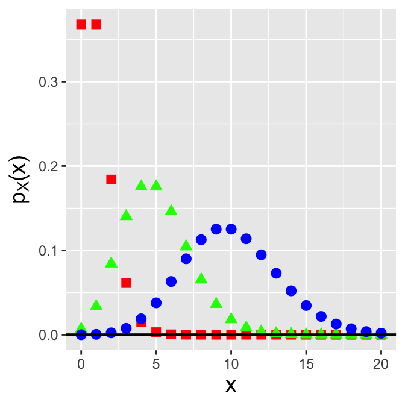
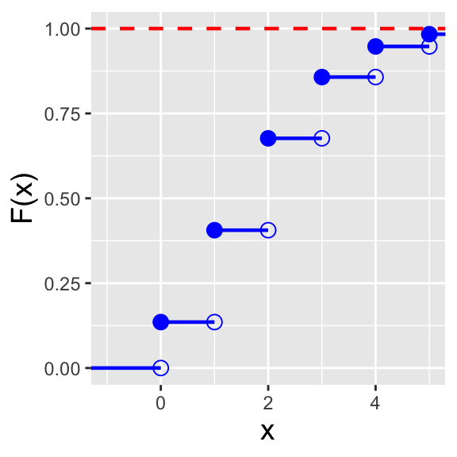
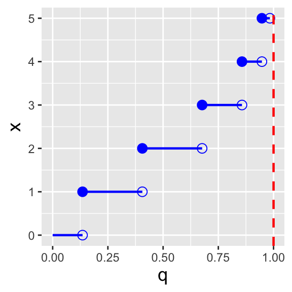
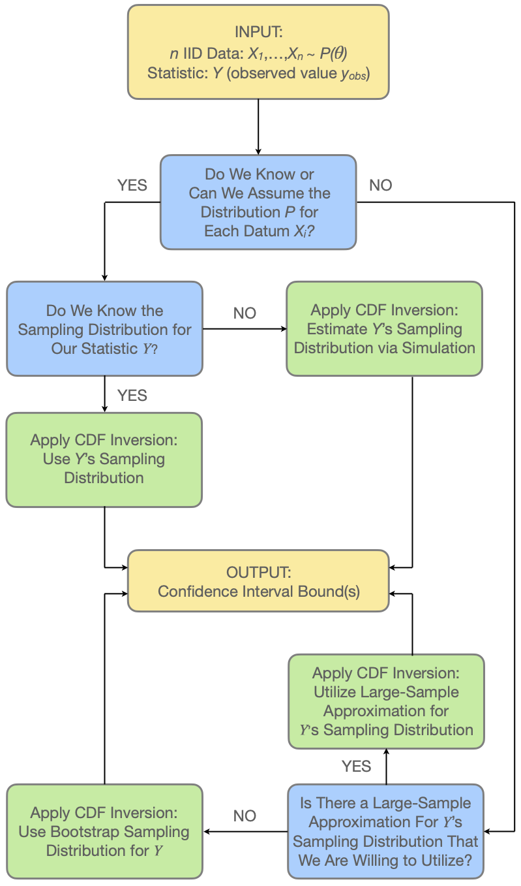
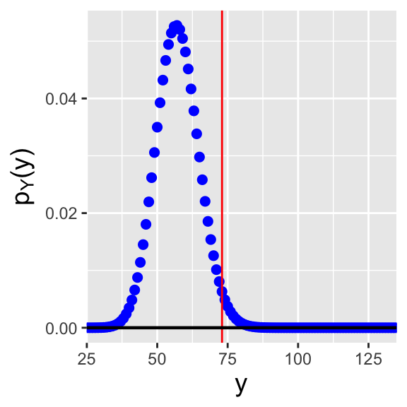
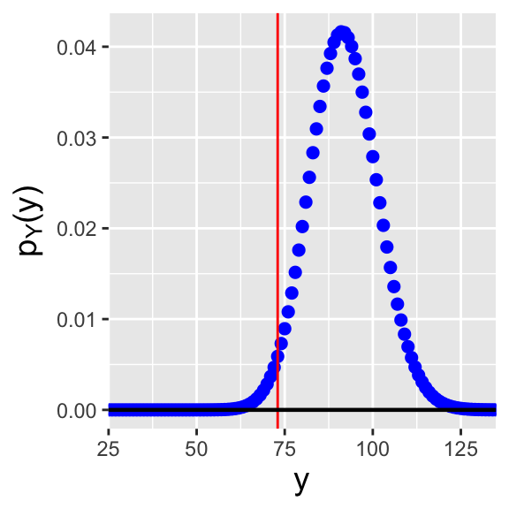
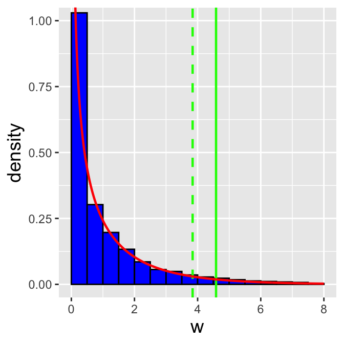
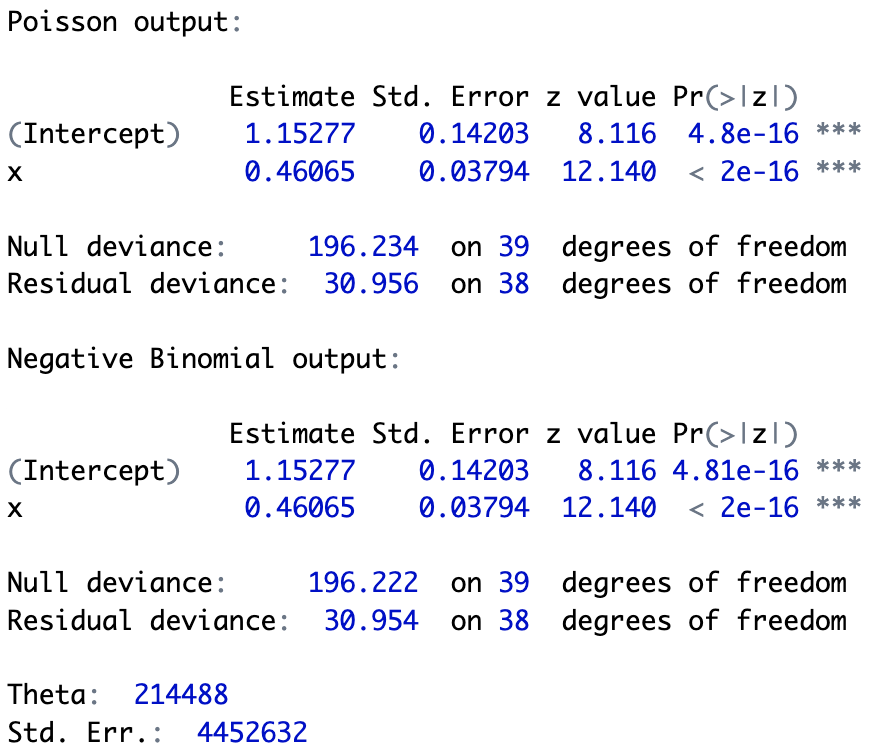

4 The Poisson (and Related) Distributions
In this chapter, we illustrate probability and statistical inference concepts utilizing the Poisson distribution, which governs the data that arise from Poisson processes: spatio-temporal experiments whose outcomes are counts.
One of the challenges of a Prussian soldier’s life in the 19th century was avoiding being kicked by horses. This was no trivial matter: over one 20-year period, 122 soldiers died from horse-kick-related injuries. The data below are from Fisher (1925), and they are a subset of the original data that were compiled earlier by the statistician Ladislaus Bortkiewicz.
| \(x\) | \(N(x)\) |
|---|---|
| 0 | 109 |
| 1 | 65 |
| 2 | 22 |
| 3 | 3 |
| 4 | 1 |
\(x\) is the number of deaths observed in any one Prussian army corp in any one year, and \(N(x)\) is the number of corps-years in which \(x\) deaths were observed. (\(N(x)\) sums to \(20 \cdot 10 = 200\), reflecting that the compiled data represent 10 army corps observed over a 20-year period.)
These data are an example of a process, i.e., a sequence of observations, but we can immediately see that unlike the case with coin flips, this process is not a Bernoulli process. That’s because the number of possible outcomes is greater than two (0 and 1); in fact, the number of possible outcomes is countably infinite, so we could not even call this a multinomial process. Well, the reader might say, we could simply discretize the data more finely, so that the number of possible outcomes is at least finite (multinomial) or better yet falls to two (Bernoulli). Let’s get monthly data, or daily data, or hourly data. However, there is no time period \(\Delta t\) for which the number of possible outcomes is limited to some maximum value: in theory, an infinite number of soldiers could die in the same second, or even the same nanosecond.
But let’s keep playing with this idea of making the time periods smaller and smaller. Let the number of time periods into which we divide our observation interval, \(k\), go to infinity such that the probability of observing a horse-kick death \(p\) goes to zero, but in such a way that \(kp \rightarrow \lambda\), where \(\lambda\) is a constant. Under these conditions, the binomial distribution transforms into the Poisson distribution, which Bortkiewicz dubbed the law of small numbers. This distribution gives the probability of observing a particular number of events (“counts”) in a fixed interval of space and/or time, given some expected number of events in that interval, and is the one that is most commonly applied in practice to model counts-based data.
4.1 Probability Mass Function
What to take away from this section:
The Poisson distribution is a discrete distribution with a probability mass function whose shape and location along the real-number line is governed by a single parameter: \(\lambda\), the number of counts we expect to record, on average, over the course of an experiment.
As was the case for the binomial probability mass function, the shape of the Poisson pmf tends to that of the normal as \(\lambda\) gets larger, which has historically led analysts to utilize a normal approximation when making statistical inferences…but with computers, we can now easily make exact ones.
Recall: a probability mass function is one way to represent a discrete probability distribution, and it has the properties (a) \(0 \leq p_X(x) \leq 1\) and (b) \(\sum_x p_X(x) = 1\), where the sum is over all values of \(x\) in the distribution’s domain.
To derive the Poisson probability mass function, we start by writing down the binomial distribution, setting \(p\) to \(\lambda/k\), where \(\lambda\) is an arbitrarily valued positive constant, and letting \(k\) go to infinity: \[\begin{align*} P(X=x) &= \binom{k}{x} p^x (1-p)^{k-x} = \frac{k!}{x!(k-x)!} \left(\frac{\lambda}{k}\right)^x \left(1-\frac{\lambda}{k}\right)^{k-x} \\ &= \frac{k!}{(k-x)! k^x} \frac{\lambda^x}{x!} \left(1-\frac{\lambda}{k}\right)^{k-x} \\ &= \left(\frac{k}{k}\right) \left(\frac{k-1}{k}\right) \cdots \left(\frac{k-x+1}{k}\right) \left(\frac{\lambda^x}{x!}\right) \left(1-\frac{\lambda}{k}\right)^{k-x} \\ &\rightarrow \frac{\lambda^x}{x!} \left(1-\frac{\lambda}{k}\right)^{k-x} ~~~\mbox{as}~~~ k \rightarrow \infty \\ &\rightarrow \frac{\lambda^x}{x!} \left(1-\frac{\lambda}{k}\right)^k ~~~~~~~~\mbox{as}~~~ k \rightarrow \infty \,. \end{align*}\] We now concentrate on the parenthetical term above. Given that \[ \lim_{k \rightarrow \infty} \left(1 - \frac{1}{k}\right)^k = e^{-1} \,, \] we can state that \[ \lim_{k \rightarrow \infty} \left(1 - \frac{1}{k/\lambda}\right)^{k/\lambda} = e^{-1} \implies \lim_{k \rightarrow \infty} \left(1 - \frac{1}{k/\lambda}\right)^k = e^{-k} \,. \] We can now write down the probability mass function for a Poisson random variable (see Figure 4.1): \[ P(X=x) = p_X(x) = \frac{\lambda^x}{x!} e^{-\lambda} \,, \] where \(x \in \{0,1,\ldots,\infty\}\) and \(\lambda > 0\). To indicate that we have sampled a datum from a Poisson distribution, we write \(X \sim\) Poisson(\(\lambda\)). The expected value and variance of the Poisson distribution are \(E[X] = \lambda\) and \(V[X] = \lambda\), respectively; the former is derived below in an example. As we will show in another example below, a Poisson random variable converges in distribution to a normal random variable as \(\lambda \rightarrow \infty\), a result which affects how Poisson-distributed data have historically been treated in, e.g., hypothesis test settings.
4.1.1 Poisson Random Variable: Expected Value
Recall: the expected value of a discretely distributed random variable is \[ E[X] = \sum_x x p_X(x) \,, \] where the sum is over all values of \(x\) within the domain of the pmf p_X(x). The expected value is equivalent to a weighted average, with the weight for each possible value of \(x\) given by \(p_X(x)\).
For a Poisson distribution, the expected value is \[ E[X] = \sum_{x=0}^\infty x \frac{\lambda^x}{x!} e^{-\lambda} = \sum_{x=1}^\infty x \frac{\lambda^x}{x!} e^{-\lambda} = \sum_{x=1}^\infty \frac{\lambda^x}{(x-1)!} e^{-\lambda} \,. \] The trick here is to move constants into or out of the summation so that the summation becomes one of a probability mass function over its entire domain. Here, we move \(\lambda\) out of the summation, and make the substitution \(y = x-1\); the summand then takes on the form of a Poisson pmf, summed over its entire domain: \[ E[X] = \lambda \sum_{x=1}^\infty \frac{\lambda^{x-1}}{(x-1)!} e^{-\lambda} = \lambda \sum_{y=0}^\infty \frac{\lambda^{y}}{y!} e^{-\lambda} = \lambda \,. \]
Recall: the variance of a discretely distributed random variable is \[ V[X] = \sum_x (x-\mu)^2 p_X(x) = E[X^2] - (E[X])^2\,, \] where the summation is over all values of \(x\) within the domain of the pmf \(p_X(x)\). The variance represents the square of the “width” of a probability mass function, where by “width” we mean the range of values of \(x\) for which \(p_X(x)\) is effectively non-zero.
A similar calculation to the one above, but that starts with the derivation of the factorial moment \(E[X(X-1)]\), eventually yields the Poisson variance, which is also \(\lambda\).
4.1.2 Poisson Distribution: Normal Approximation
As the expected number of counts, \(\lambda\), increases, a Poisson random variable will converge in distribution to a normal random variable. Here, we show mathematically why this is the case.
The Poisson probability mass function is \[ p_X(x \vert \lambda) = \frac{\lambda^x}{x!} e^{-\lambda} \,. \] We note that the normal probability density function does not have a factorial in it, so we will start by using Stirling’s approximation: \[ x! \approx \sqrt{2 \pi x} x^x e^{-x} \,. \] This approximation has an error of 1.65% for \(x = 5\) and 0.83% for \(x = 10\), with the percentage error continuing to shrink as \(x \rightarrow \infty\). With this approximation, we can write that \[ p_X(x \vert \lambda) \approx \frac{\lambda^x}{\sqrt{2 \pi x}} x^{-x} e^{x-\lambda} \,. \] This still does not quite look like a normal pdf. So there is more work to do. We compute the logarithm of this quantity: \[\begin{align*} \log p_X(x \vert \lambda) &\approx x \log \lambda - \frac{1}{2} \log (2 \pi x) - x \log x + x - \lambda \\ &= -x ( \log x - \log \lambda ) - \frac{1}{2} \log (2 \pi x) + x - \lambda \,, \end{align*}\] and then look at \(\log x - \log \lambda\): \[ \log x - \log \lambda = \log \frac{x}{\lambda} = \log \left( 1 - \frac{\lambda-x}{\lambda}\right) \approx -\frac{\delta}{\sqrt{\lambda}} - \frac{\delta^2}{2 \lambda} - \cdots \,. \] Here, \(\delta = (\lambda - x)/\sqrt{\lambda}\). Plugging this result into the expression for \(\log p_X(x \vert \lambda)\), we find that \[ \log p_X(x \vert \lambda) \approx -\frac{1}{2} \log (2 \pi x) + x \left( \frac{\delta}{\sqrt{\lambda}} + \frac{\delta^2}{2\lambda} \right) - \delta \sqrt{\lambda} \,. \] The next step is plug in \(x = \lambda - \sqrt{\lambda}\delta\): \[\begin{align*} \log p_X(x \vert \lambda) &\approx -\frac{1}{2} \log (2 \pi x) + (\lambda - \sqrt{\lambda}\delta)\left( \frac{\delta}{\sqrt{\lambda}} + \frac{\delta^2}{2\lambda} \right) - \delta \sqrt{\lambda} \\ &= -\frac{1}{2} \log (2 \pi x) + \sqrt{\lambda}\delta - \delta^2 + \frac{\delta^2}{2} - \frac{\delta^3}{2 \lambda^{3/2}} - \sqrt{\lambda}\delta \\ &\approx -\frac{1}{2} \log (2 \pi x) - \frac{\delta^2}{2} \,, \end{align*}\] where we drop the \(\mathcal{O}(\delta^3)\) term. When we exponentiate both sides, the final result is \[ p_X(x \vert \lambda) \approx \frac{1}{\sqrt{2 \pi x}} \exp\left( -\frac{\delta^2}{2} \right) = \frac{1}{\sqrt{2 \pi x}} \exp\left( -\frac{(x-\lambda)^2}{2\sqrt{\lambda}} \right) \,. \] This has the (approximate) form of a normal pdf, at least for values \(x \approx \lambda\). So, in the end, the Poisson probability mass function \(p_X(x \vert \lambda)\) has approximately the same shape as the normal probability density function \(f_X(x \vert \mu=\lambda,\sigma^2=\lambda)\) for \(x \gg 1\) and \(x \approx \lambda\).
4.1.3 Poisson Distribution: Exponential Family
Recall: the exponential family of distributions is the set of distributions whose probability mass or density functions can be expressed as \[ h(x) \exp\left[\left(\sum_{i=1}^p \eta_i(\boldsymbol{\theta}) T_i(x)\right) - A(\boldsymbol{\theta})\right] \,, \] where \(\boldsymbol{\theta}\) is a vector of parameters (e.g., \(\boldsymbol{\theta} = \{\mu,\sigma^2\}\) for a normal distribution). Note that none of the parameters can be a domain-specifying parameter.
Is the Poisson distribution a member of the larger exponential family of distributions? We will start our answer to this question by noting that \[\begin{align*} \lambda^x = \exp\left(\log \lambda^x\right) = \exp\left(x \log \lambda\right) \,. \end{align*}\] Thus \[\begin{align*} p_X(x) = \frac{1}{x!} \exp\left(x \log \lambda - \lambda\right) \,. \end{align*}\] and \[\begin{align*} h(x) &= \frac{1}{x!} ~~~~~~ \eta(\lambda) = \log \lambda ~~~~~~ T(x) = x ~~~~~~ A(\lambda) = \lambda \,. \end{align*}\] The Poisson distribution is indeed a member of the exponential family.
4.2 Poisson Distribution: Cumulative Distribution Function
What to take away from this section:
- The cumulative distribution function, or cdf, for a Poisson distribution is a step function that can be difficult to work with analytically (which historically motivated the application of the normal approximation, but which now leads us to use coding for exact inference).
Recall: the cumulative distribution function, or cdf, is another means by which to encapsulate information about a probability distribution. For a discrete distribution, it is defined as \(F_X(x) = \sum_{y\leq x} p_Y(y)\), and it is defined for all values \(x \in (-\infty,\infty)\), with \(F_X(-\infty) = 0\) and \(F_X(\infty) = 1\).
For the Poisson distribution, the cdf is \[
F_X(x) = \sum_{y=0}^{\lfloor x \rfloor} p_Y(y) = \sum_{y=0}^{\lfloor x \rfloor} \frac{\lambda^y}{y!} \exp(-\lambda) = \frac{\Gamma(\lfloor x+1 \rfloor,\lambda)}{\lfloor x \rfloor !} \,,
\] where \(\lfloor x \rfloor\) denotes the floor function, which returns the largest integer that is less than or equal to \(x\) (e.g., if \(x\) = 8.33, \(\lfloor x \rfloor\) = 8), and where \(\Gamma(\cdot,\cdot)\) is the upper incomplete gamma function \[
\Gamma(\lfloor x+1 \rfloor,\lambda) = \int_{\lambda}^\infty u^{\lfloor x \rfloor} e^{-u} du \,.
\] (An example of an R function which computes the upper incomplete gamma function is incgam() in the pracma package.) As we are dealing with a probability mass function, the cdf is a step function, as illustrated in the left panel of Figure 4.2. Recall that because of the step-function nature of the cdf, the form of inequalities in a probabilistic statement matter: e.g., \(P(X < x)\) and \(P(X \leq x)\) will not be the same if \(x\) is zero or a positive integer.
Recall: an inverse cdf function \(x = F_X^{-1}(q)\) takes as input a distribution quantile \(q \in [0,1]\) and returns the value of \(x\). A discrete distribution has no unique inverse cdf; it is convention to utilize the generalized inverse cdf, \[ x = \mbox{inf}\{x : F_X(x) \geq q\} \,, \] where “inf” indicates that the function is to return the smallest value of \(x\) such that \(F_X(x) \geq q\).
In the right panel of Figure 4.2, we display the inverse cdf for the same distribution used to generate the figure in the left panel (\(\lambda = 2\)). Like the cdf, the inverse cdf for a discrete distribution is a step function.


4.2.1 Computing Probabilities
- If \(X \sim\) Poisson(5), which is \(P(4 \leq X < 6)\)?
We first note that due to the form of the inequality, we do not include \(X=6\) in the computation. Thus \(P(4 \leq X < 6) = p_X(4) + p_X(5)\), which equals \[ \frac{5^4}{4!}e^{-5} + \frac{5^5}{5!}e^{-5} = \frac{5^4}{4!}e^{-5} \left( 1 + \frac{5}{5} \right) = 2\frac{5^4}{4!}e^{-5} = 0.351\,. \] If we utilize
R:
Code
round(dpois(4, lambda = 5) + dpois(5, lambda = 5), 3)[1] 0.351Note that we can take advantage of
R’s vectorization capabilities by writing the above as
Code
round(sum(dpois(4:5, lambda = 5)), 3)[1] 0.351This approach is far more convenient than writing out a string of calls to
dpois(), particularly when the number of values of \(x\) to sum over becomes large. We can also utilize cdf functions here: \[\begin{align*} P(4 \leq X < 6) &= P(X < 6) - P(X < 4) = P(X \leq 5) - P(X \leq 3)\\ &= F_X(5) - F_X(3) \,, \end{align*}\] which inRis computed as follows:
Code
round(ppois(5, lambda = 5) - ppois(3, lambda = 5), 3)[1] 0.351However, summing pmf values is the preferred approach, as this approach makes it easier to properly take into account the form of any inequalities in a probability statement.
- If \(X \sim\) Poisson(5), what is the value of \(a\) such that \(P(X \leq a) = 0.9\)?
First, we set up the inverse cdf formula: \[ P(X \leq a) = F_X(a) = 0.9 ~~~ \Rightarrow ~~~ a = F_X^{-1}(0.9) \] Note that we do not do anything differently here than we would have done in a continuous distribution setting…and we can proceed directly to
Rbecause it utilizes the generalized inverse cdf algorithm.
Code
qpois(0.9, lambda = 5)[1] 84.4 Linear Functions of Poisson Random Variables
What to take away from this section:
The method of moment-generating functions allows us to determine that…
the sum of \(n\) iid Poisson random variables is itself Poisson distributed; and
the mean of \(n\) iid binomial random variables has a known but typically unutilized distribution: it is the sample sum distribution with a transformed domain.
Foreshadowing: the sample sum result will allow us to make statistical inferences about the Poisson expected counts parameter \(\lambda\), given \(n\) iid normal random variables.
Let’s assume we are given \(n\) iid Poisson random variables: \(X_1,X_2,\ldots,X_n \sim\) Poisson(\(\lambda\)). What is the distribution of \(Y = \sum_{i=1}^n a_i X_i\)?
Recall: the moment-generating function, or mgf, is a means by which to encapsulate information about a probability distribution. When it exists, the mgf is given by \(m_X(t) = E[e^{tX}]\). Also, if \(Y = \sum_{i=1}^n a_iX_i\), then \(m_Y(t) = m_{X_1}(a_1t) m_{X_2}(a_2t) \cdots m_{X_n}(a_nt)\); if we can identify \(m_Y(t)\) as the mgf for a known family of distributions, then we can immediately identify the distribution for \(Y\) and the parameters of that distribution.
If \(X\) is a Poisson random variable, then \[\begin{align*} m_X(t) = E[e^{tX}] &= \sum_{x=0}^\infty e^{tx} p_X(x) = \sum_{x=0}^\infty e^{tx} \frac{\lambda^x}{x!} e^{-\lambda} = e^{-\lambda} \sum_{x=0}^\infty \frac{\lambda^x}{x!} e^{tx} \\ &= e^{-\lambda} \left[ 1 + \lambda e^t + \frac{\lambda^2}{2!}e^{2t} + \ldots \right] = e^{-\lambda} \left[ 1 + y + \frac{y^2}{2!} + \ldots \right] \\ &= e^{-\lambda} e^y = \exp(-\lambda) \exp(\lambda e^t) = \exp[\lambda(e^t-1)] \,. \end{align*}\] Thus the mgf for \(Y = \sum_{i=1}^n X_i\) is \[\begin{align*} m_Y(t) &= \exp\left[\lambda\left(e^t-1\right)\right] \cdots \exp\left[\lambda\left(e^t-1\right)\right]\\ &= \exp\left[(\lambda+\cdots+\lambda)(e^t-1)\right] = \exp\left[n\lambda(e^t-1)\right] \,. \end{align*}\] This mgf retains the form of a Poisson mgf. We thus see that the sum of \(n\) iid Poisson-distributed random variables is itself Poisson distributed with parameter \(n\lambda\), i.e., \(Y = \sum_{i=1}^n X_i \sim\) Poisson(\(n\lambda\)).
As was the case for the binomial distribution, the sample mean of \(n\) iid Poisson-distributed random variables has a sampling distribution whose masses are identical to those observed for the sample sum, but whose domain shifts from \(\{0,1,\cdots\}\) to \(\{0,1/n,\cdots\}\). (As a reminder, we can derive this result mathematically by making the general transformation \(\sum_{i=1}^n X_i \rightarrow (\sum_{i=1}^n X_i)/n\).) While we could define, e.g., the sample mean pmf ourselves using our own R function, there is no real need to: e.g., if we wish to construct a confidence interval for \(\lambda\), we can simply construct one for \(n\lambda\) using the sum of the data as a statistic, and then divide each bound by \(n\). (We could also, in theory, utilize the Central Limit Theorem if \(n \gtrsim 30\), but there is absolutely no reason to do that to make inferences about \(\lambda\): we know the distribution of the sum of the data exactly, and thus there is no need to fall back upon approximations.)
4.4.1 Two Poisson Random Variables: Difference Distribution
Let’s assume that we are pointing a camera at an object, such as a star. A star gives off photons at a particular average rate \(r_S\) (with units of, e.g., photons per second). Thus if we open the shutter for a length of time \(t\), the number of photons we observe from the star is a Poisson random variable \(S \sim\) Poisson(\(\lambda_S=r_St\)). But the star is not the only object in the field of view; there may be other objects in the background that give off photons at a rate \(r_B\), and the number of photons we observe from the background will be \(B \sim\) Poisson(\(\lambda_B=r_Bt\)). Thus what we record is not \(S\), but \(T = S+B\)…so how can we make statistical inferences about \(S\) itself?
One possibility is to point the camera to an “empty” field near the star, and record some number of photons \(B\) over the same amount of time. Then we can estimate \(S\) using \(S = T - B\). What is the distribution of \(S\)?
We can utilize the method of moment-generating functions and write that \[\begin{align*} m_S(t) = m_T(t) m_B(-t) &= \exp[\lambda_T(e^t-1)] \exp[\lambda_B(e^{-t}-1)] \\ &= \exp[\lambda_T(e^t-1) + \lambda_B(e^{-t}-1)] \\ &= \exp[-(\lambda_T+\lambda_B) + \lambda_Te^t + \lambda_Be^{-t}] \,, \end{align*}\] where \(\lambda_T = \lambda_S+\lambda_B = (r_S+r_B)t\). At first, utilizing the method of mgfs appears to be a fool’s errand: this is not an mgf we know. But it turns out that the family of distributions associated with this mgf does have a name: \(S = T-B\) is a random variable sampled according to a Skellam distribution, with mean \(\lambda_T-\lambda_B\) and variance \(\lambda_T+\lambda_B\). We can work with this distribution to, e.g., construct confidence intervals for \(\mu_S\), etc., if we so choose. (Note, however, that in order to do this we would need to fix \(\mu_B\)…or we would have to move into the realm of numerical confidence region construction, which is beyond the scope of this book.)
4.4.2 Zero-Inflated Poisson Distribution: Moment-Generating Function
Recall that the zero-inflated Poisson, or ZIP, distribution has probability mass function \[ p_X(x) = \left\{ \begin{array}{ll} \theta + (1-\theta) e^{-\lambda} & x = 0 \\ (1 - \theta) \frac{\lambda^x}{x!} e^{-\lambda} & x = \{1,2,\ldots\} \end{array} \right. \] If we have \(n\) iid data distributed according to a ZIP distribution, can we determine the distribution of, e.g., the sample sum?
The moment-generating function for the ZIP distribution is \[\begin{align*} m_X(t) = E[e^{tX}] &= \sum_{x=0}^\infty e^{tx} p_X(x) \\ &= \theta + (1-\theta)e^{-\lambda} + \sum_{x=1}^\infty e^{tx} (1-\theta) \frac{\lambda^x}{x!} e^{-\lambda} \\ &= \theta + \sum_{x=0}^\infty e^{tx} (1-\theta) \frac{\lambda^x}{x!} e^{-\lambda} \\ &= \theta + (1-\theta) e^{-\lambda} \sum_{x=0}^\infty \frac{\lambda^x}{x!} e^{tx} \\ &= \theta + (1-\theta) \exp(-\lambda) \exp(\lambda e^t) = \theta + (1-\theta) \exp[\lambda(e^t-1)] \,. \end{align*}\] We have already seen how to evaluate the final summation, in an example just above.
The mgf for, e.g., the sample sum is \[ m_Y(t) = \prod_{i=1}^n m_{X_i}(t) = \left[ m_X(t) \right]^n = \left[ \theta + (1-\theta) \exp[\lambda(e^t-1)] \right]^n \,. \] It is clear that this is not the mgf of a ZIP distribution (or any other distribution with which we are familiar). Hence any statistical inference that we would wish to perform given ZIP-distributed data would require us to utilize simulations. We show how to use simulations to, e.g., construct confidence intervals in an example later in this chapter.
(We note, for completeness, that we run into the same issue with the zero-truncated Poisson distribution. We can derive the mgf easily enough… \[ m_X(t) = \frac{\exp[\lambda(e^t-1)] - \exp(-\lambda)}{1 - \exp(-\lambda)} \] …but we cannot use it to derive an exact sampling distribution for, e.g., the sample sum.)
4.4.3 Exponential Data: Sample Sum Distribution
As stated above, the exponential distribution, i.e., the gamma distribution with \(\alpha = 1\), is used to model the waiting time between two successive events in a Poisson process. Let’s assume that we have recorded \(n\) separate times between \(n\) separate pairs of events. What is the distribution of \(T = T_1 + \cdots + T_n\)?
As we do when faced with a linear function of \(n\) iid random variables, we utilize the method of moment-generating functions: \[ m_T(t) = \prod_{i=1}^n m_{T_i}(t) \,, \] where \(m_{T_i}(t) = (1-b t)^{-1}\) is the mgf for the exponential distribution. Thus \[ m_T(t) = \prod_{i=1}^n (1-b t)^{-1} = (1-b t)^{-n} \,. \] This has the form of the mgf for a Gamma(\(n,b\)) distribution, or, equivalently, an Erlang(\(n,b\)) distribution. In other words the sum of \(n\) iid waiting times has the same distribution as the waiting time between the \(i^{\rm th}\) and \((i+n)^{\rm th}\) events of a Poisson process.
4.5 Point Estimation
What to take away from this section:
Along with the maximum likelihood estimator and the minimum variance unbiased estimator, there has historically been a third point estimator that practitioners have used: the method of moments estimator or MoM estimator.
The MoM estimator is useful when, e.g., we are trying to jointly estimate two or more parameter values, or when we are trying to estimate one value and we cannot analytically derive either the MLE or the MVUE.
A MoM estimator does not possess the invariance property, nor is there a guarantee that it converges in distribution to a normal random variable.
In the age of computers, the method of moments has been superseded by the use of numerical optimization to estimate the MLE.
Previously, we described two commonly used point estimators: the maximum likelihood estimator (or MLE) and the minimum variance unbiased estimator (or MVUE). We review both below in examples, in the context of estimating the Poisson \(\lambda\) parameter. Here, for completeness, we introduce one last, less-commonly used approach, the so-called method of moments estimator.
The method of moments (or MoM) is a classic means by which to define estimators that has been historically useful when we face with the following situation: (a) the likelihood function is not easily differentiated, because it contains terms like \(\Gamma(\theta)\); and (b) the distribution has two or more free parameters, rendering it difficult (though certainly not impossible) to define the MVUE, since we would have to work with joint sufficient statistics and their multivariate sampling distributions. Now, why do we say “historically useful”? Because in the age of computers, we can always determine MLEs (or, at least, their numerical values) via numerical optimization (as shown in an example below), which effectively eliminates any need to ever use the MoM estimator in practice.
Recall that by definition, \(E[X^k]\) is the \(k^{\rm th}\) moment of the distribution of the random variable \(X\). We can define analagous sample moments, e.g., \[ m_1 = \frac{1}{n} \sum_{i=1}^n X_i = \bar{X} ~~ \mbox{and} ~~ m_2 = \frac{1}{n} \sum_{i=1}^n X_i^2 = \overline{X^2} \,. \] (For \(m_2\): note that the average of \(X_i^2\) is not the same as the average of \(X_i\), squared.) Let’s suppose that we have \(p\) parameters that we are trying to estimate. In method of moments estimation, we generally set the first \(p\) population moments equal to the first \(p\) sample moments and solve the system of equations to determine parameter estimates. These estimates are generally consistent, but also may be biased. (Situations may exist where higher-order moments may be preferable to use, such as when the one parameter of a distribution is \(\sigma^2\) and thus we might derive a better estimator using the second moment rather than the first, but typically we use the first \(p\) moments.)
For the Poisson distribution, there is one parameter to estimate and thus we set \(\mu_1' = E[X] = \lambda = m_1' = \bar{X}\). We thus find that \(\hat{\lambda}_{MoM} = \bar{X}\). For a more relevant example of method of moments usage, see below.
4.5.1 Poisson Expected Counts: Maximum Likelihood Estimator
Recall: the value of \(\theta\) that maximizes the likelihood function is the maximum likelihood estimate, or MLE, for \(\theta\). The maximum is found by taking the (partial) derivative of the (log-)likelihood function with respect to \(\theta\), setting the result to zero, and solving for \(\theta\). That solution is the maximum likelihood estimate \(\hat{\theta}_{MLE}\). Also recall the invariance property of the MLE: if \(\hat{\theta}_{MLE}\) is the MLE for \(\theta\), then \(g(\hat{\theta}_{MLE})\) is the MLE for \(g(\theta)\).
The likelihood function for the Poisson parameter \(\lambda\) is \[ \mathcal{L}(\lambda \vert \mathbf{x}) = \prod_{i=1}^n \frac{\lambda^{x_i}}{x_i!} \exp(-\lambda) \] and the log-likelihood is \[ \ell(\lambda \vert \mathbf{x}) = \left(\sum_{i=1}^n x_i\right) \log \lambda - n \lambda - \log\left(\prod_{i=1}^n x_i!\right) \,. \] (Note that we could write this as \[ \ell(\lambda \vert \mathbf{x}) \propto \left(\sum_{i=1}^n x_i\right) \log \lambda - n \lambda \,, \] where \(\propto\) is the proportionality symbol, because the last term in the original log-likelihood will disappear during differentiation because it does not contain \(\lambda\).) The derivative of \(\ell(\lambda \vert \mathbf{x})\) with respect to \(\lambda\) is \[ \frac{d\ell}{d\lambda} = \left(\frac{1}{\lambda}\sum_{i=1}^n x_i \right) - n \,. \] Setting the derivative to zero and rearranging terms, we find that \[ \hat{\lambda}_{MLE} = \frac{1}{n} \sum_{i=1}^n X_i = \bar{X} \] is the MLE for \(\lambda\).
Recall: the bias of an estimator is the difference between the average value of the estimates it generates and the true parameter value. If \(E[\hat{\theta}-\theta] = 0\), then the estimator \(\hat{\theta}\) is said to be unbiased.
By the general rule for \(\bar{X}\) introduced in Chapter 1, \(E[\hat{\lambda}_{MLE}] = E[\bar{X}] = \lambda\), so \(\hat{\lambda}_{MLE}\) is an unbiased estimator. (There is no guarantee that the MLE will always be an unbiased estimator\(-\)it just happens to be so here\(-\)but it will always be at least asymptotically unbiased.)
Recall: an estimator is consistent if its mean-squared error, \(B[\hat{\theta}]^2 + V[\hat{\theta}]\), goes to zero as the sample size \(n\) goes to infinity.
\(V[\hat{\lambda}_{MLE}] = \lambda/n\), so \(\hat{\lambda}_{MLE}\) is a consistent estimator, since \(\hat{\lambda}_{MLE} \rightarrow \lambda\) as \(n \rightarrow \infty\). (The MLE is always a consistent estimator.)
If we wish to find the MLE for a function of the parameter, e.g., \(\lambda^2\), we simply apply that function to \(\hat{\theta}_{MLE}\). Hence \(\hat{\lambda^2}_{MLE}\) is \(\bar{X}^2\). This is the invariance property of the MLE.
Last, recall that the MLE converges in distribution to a normal random variable with mean \(\theta\) and variance \(1/I_n(\theta)\), where \(I_n(\theta)\) is the Fisher information content of the data sample. Here, that means that \[ \hat{\lambda} \overset{d}{\rightarrow} Y \sim \mathcal{N}\left(\lambda,\frac{\lambda}{n}\right) \,. \]
4.5.2 Poisson Expected Counts: Minimum Variance Unbiased Estimator
Recall: deriving the minimum variance unbiased estimator involves two steps:
- factorizing the likelihood function to uncover a sufficient statistic \(U\) (that we assume is both minimal and complete); and
- finding a function \(h(U)\) such that \(E[h(U)] = \lambda\).
A sufficient statistic for a parameter (or parameters) \(\theta\) captures all information about \(\theta\) contained in the sample.
When we factorize the likelihood function, \[ \mathcal{L}(\lambda \vert \mathbf{x}) = \prod_{i=1}^n \frac{\lambda^{x_i}}{x_i!} e^{-\lambda} = \left(\prod_{i=1}^n \frac{1}{x_i!}\right) \left(\prod_{i=1}^n \lambda^{x_i}e^{-\lambda}\right) = \underbrace{\left(\prod_{i=1}^n \frac{1}{x_i!}\right)}_{h(\mathbf{x})} \underbrace{\lambda^{\sum_{i=1}^n x_i}e^{-n\lambda}}_{g\left(\sum_{i=1}^n x_i,\lambda\right)} \,, \] we see that a sufficient statistic is \(Y = \sum_{i=1}^n X_i\). Let’s determine the expected value for \(Y\): \[ E[Y] = E\left[\sum_{i=1}^n X_i\right] = \sum_{i=1}^n E[X_i] = \sum_{i=1}^n \lambda = n\lambda \,. \] Thus \(h(Y) = Y/n = \bar{X}\) is the MVUE for \(\lambda\). As this matches the MLE, we know already that in addition to being unbiased, the MVUE for \(\lambda\) is a consistent estimator.
The next question is whether the variance of the MVUE achieves the Cramer-Rao Lower Bound on the variance of an unbiased estimator. We show that it does in an example below. However, achieving the CRLB is not a guarantee in all cases: when the MVUE does not, it simply means that there does not exist an unbiased estimator that achieves the CRLB.
4.5.3 Death-by-Horse-Kick: Point Estimate
We begin this chapter by displaying the number of deaths per Prussian army corps per year resulting from horse kicks. Leaving aside the question of whether it is plausible that these data are truly Poisson distributed (a question we answer later in this chapter), what is the estimated rate of death per corps per year?
The total number of events observed are \[ 0 \times 109 + 1 \times 65 + 2 \times 22 + 3 \times 3 + 4 \times 1 = 65 + 44 + 9 + 4 = 122 \,, \] and the total sample size is \(n = 200\), so \[ \hat{\lambda} = \bar{X} = \frac{1}{n} \sum_{i=1}^n X_i = \frac{122}{200} = 0.61 \,. \] This is the MLE, the MVUE, and the MoM estimate for \(\lambda\). Later, we will use these data to estimate a 95% confidence interval for \(\lambda\).
4.5.4 The CRLB for the Variance of Expected Counts Estimators
Recall: the Cramer-Rao Lower Bound (or CRLB) is the lower bound on the variance of any unbiased estimator. If an unbiased estimator achieves the CRLB, it is the MVUE…but it can be the case that the MVUE does not achieve the CRLB. For a discrete distribution, the CRLB is given by \[ V_{\rm CRLB}[\hat{\theta}] = -\left(nE\left[\frac{d^2}{d\theta^2} \log p_X(X \vert p) \right]\right)^{-1} = \frac{1}{nI(\theta)} \] where \(I(\theta)\) is the Fisher information: \[ I(\theta) = -E\left[ \frac{\partial^2}{\partial \theta^2} \log f_X(x \vert \theta) \right] \,. \]
For the Poisson distribution, \[\begin{align*} p_X(x \vert \lambda) &= \frac{\lambda^x}{x!}e^{-\lambda} \\ \log p_X(x \vert \lambda) &= x \log \lambda - \lambda - \log x! \\ \frac{d}{d\lambda} \log p_X(x \vert \lambda) &= \frac{x}{\lambda} - 1 \\ \frac{d^2}{d\lambda^2} \log p_X(x \vert \lambda) &= -\frac{x}{\lambda^2} \\ I(\lambda) = -E \left[ \frac{d^2}{d\lambda^2} \log p_X(X \vert \lambda) \right] &= \frac{1}{\lambda^2} E[X] \\ &= \frac{1}{\lambda^2} \lambda = \frac{1}{\lambda} \,. \end{align*}\] Thus \[ V_{\rm CRLB}[\hat{\lambda}] = \frac{1}{n/\lambda} = \frac{\lambda}{n} \,. \] As we already know that \(V[\bar{X}] = V[X]/n = \lambda/n\), we can say that \(\hat{\lambda}_{MLE}\), \(\hat{\lambda}_{MVUE}\), and \(\hat{\lambda}_{MoM}\) all achieve the CRLB.
4.5.5 Minimum Variance Unbiased Estimation: Lack of Invariance
As stated above, the MVUE does not possess the property of invariance. To demonstrate this, we define the MVUE for \(\lambda^2\).
The first thing to notice is that we cannot fall back on factorization to determine an appropriate sufficient statistic, since \(\lambda^2\) does not appear directly in the likelihood function. So we iterate: we make an initial guess and see where that guess takes us, and we guess again if our initial guess is wrong, etc.
A seemingly appropriate first “guess” for \(\lambda^2\) is \(\bar{X}^2\): \[ E[\bar{X}^2] = V[\bar{X}] + (E[\bar{X}])^2 = \frac{\lambda}{n} + \lambda^2 \] We do get the term \(\lambda^2\) here…but we also get \(\lambda/n\). Hmm…so let’s try \(\bar{X}^2 - \bar{X}/n\) instead: \[ E\left[\bar{X}^2 - \frac{\bar{X}}{n}\right] = E[\bar{X}^2] - \frac{1}{n}E[\bar{X}] = \frac{\lambda}{n} + \lambda^2 - \frac{\lambda}{n} = \lambda^2 \,. \] Done! The MVUE for \(\lambda^2\) is thus \(\hat{\lambda^2}_{MVUE} = \bar{X}^2-\bar{X}/n\), which is not equal to \(\hat{\lambda^2}_{MLE} = \bar{X}^2\) (except in the limit \(n \rightarrow \infty\)).
4.5.6 Gamma Distribution: Method of Moments Estimation
Recall that the probability density function for a gamma random variable \(X\) is \[ f_X(x) = \frac{x^{a-1}}{b^{a}} \frac{\exp(-x/b)}{\Gamma(a)} \,, \] for \(x \geq 0\) and \(a,b > 0\). The expected value is \(E[X] = a b\) while the variance is \(V[X] = a b^2\) (and thus \(E[X^2] = V[X] + (E[X^2])^2 = a b^2 + a^2 b^2\)).
Let’s assume we have \(n\) iid gamma-distributed random variables. Because there are two parameters, we match the first two moments: \[\begin{align*} \mu_1' = E[X] = a b &= m_1' = \bar{X} \\ \mu_2' = E[X^2] = a b^2 + a^2 b^2 &= m_2' = \frac{1}{n}\sum_{i=1}^n X_i^2 = \overline{X^2} \,. \end{align*}\] We thus have a system of two equations with two unknowns. Let \(b = \bar{X}/a\). Then \[\begin{align*} a \left( \frac{\bar{X}}{a} \right)^2 + a^2 \left( \frac{\bar{X}}{a} \right)^2 &= \overline{X^2} \\ \Rightarrow ~~~~~~ \frac{(\bar{X})^2}{a} &= \overline{X^2} - (\bar{X})^2 \\ \Rightarrow ~~~~~~ \hat{a}_{MoM} &= \frac{(\bar{X})^2}{\overline{X^2} - (\bar{X})^2} \,, \end{align*}\] and thus \[ \hat{b}_{MoM} = \frac{\bar{X}}{\hat{a}_{MoM}} = \frac{\overline{X^2} - (\bar{X})^2}{\bar{X}} \,. \]
4.5.7 Gamma Distribution: Numerical Maximum Likelihood Estimation
As noted above, a reason to utilize method of moments estimation is that it can “work” in those situations where we cannot derive the MVUE or the MLE. For instance, let’s suppose that we draw \(n\) iid data from a gamma distribution, which has the following probability density function: \[\begin{align*} f_X(x) = \frac{x^{a-1}}{b^a} \frac{e^{-x/b}}{\Gamma(a)} \,, \end{align*}\] where \(x \in [0,\infty)\) and \(a,b > 0\). If \(a\) and \(b\) are both freely varying, then we are in a situation in which we have joint sufficient statistics…and thus we are not able to compute the MVUEs. We then fall back on trying to compute the MLEs…but what, e.g., is the partial derivative of \(n \log \Gamma(a)\) with respect to \(a\)?
With computers, we can circumvent this last issue by attempting to maximize the value of the likelihood function, as a function of \(a\) and \(b\), using a numerical optimizer.
The subject of numerical optimization is far too vast for us to be able to cover all the important details here. It suffices to say that our goal is to (a) define an objective function (here, the log-likelihood), and (b) pass that function into an optimizer that explores the space of free parameters (here, \(a\) and \(b\)) and returns the parameter values that optimize the objective function’s value (here, the ones that maximize the log-likelihood).
Let’s start with the objective function. If the pdf or pmf of our random variables is already coded in
R, we can use that coded function rather than write out the function mathematically. Recall that when we have sampled iid (continuously valued) data, \[\begin{align*} \ell(\theta \vert \mathbf{x}) = \sum_{i=1}^n \log f_X(x_i \vert \theta) \end{align*}\] For the specific case of the gamma distribution, we can convert this statement into code:
sum(log(dgamma(x, shape=a, scale=b)))where
dgamma()is the gamma pdf function. This is the objective function, except for one tweak that we will make: becauseR’soptim()function minimizes the objective function value by default, and we want to maximize the log-likelihood value, we will use
-sum(log(dgamma(x, shape=a, scale=b)))instead. So let’s now write down the full function:
f <- function(par, x)
{
-sum(log(dgamma(x, shape=par[1], scale=par[2])))
}Note how
Rexpects the parameter values to be contained within a single vector, which here we callpar.
The rest of the coding is straightforward: (a) we initialize the vector
parwith initial (good!) guesses for the values of the parameters, (b) passparand the observed data intooptim(), and (c) access theparelement of the list output byoptim(). The initial parameter values should be “close enough” to the optimized values so that the optimizer does not wander off to a local minimum that is not the global minimum. (And a good way to generate plausible initial values is to utilize the MoM estimator!)
Code
set.seed(236)
# generate observed data
n <- 40
a <- 2.440 # arbitrarily chosen true values
b <- 5.390
X <- rgamma(n, shape = a, scale = b)
# compute MLE values via optimization
f <- function(par, x)
{
-sum(log(dgamma(x, shape = par[1], scale = par[2])))
}
# generate initial guesses using MoM estimator
a.MoM <- mean(X)^2 / (mean(X^2) - mean(X)^2)
b.MoM <- mean(X) / a.MoM
par <- c(a.MoM, b.MoM)
# optimize
opt <- optim(par, f, x = X) # need to specify x via an extra argument
round(opt$par, 3)[1] 2.274 4.932We thus find that \(\hat{a}_{\rm MLE} = 2.274\) and \(\hat{b}_{\rm MLE} = 4.932\). These values are close to, but not equal to, the true values; because these are MLEs, we know that our estimates will get closer and closer to the true values as \(n \rightarrow \infty\).
4.6 Confidence Intervals
What to take away from this section:
Given \(n\) iid data sampled according to a normal distribution, we can utilize numerical root-finding frameworks to construct \(100(1-\alpha)\)-percent confidence intervals for the Poisson expected counts parameter \(\lambda\).
If we do not know the sampling distribution for our chosen statistic \(Y\), but we do know (or can assume) the distribution that governs the sampling of each of our \(n\) iid data, we can utilize a simulation framework to construct interval estimates that are exact (i.e., that match what we would find if we did know the sampling distribution of \(Y\)) to within, e.g., one part in 10,000.
It is only if we do not know the sampling distribution of our chosen statistic \(Y\), and we do not know (nor do we wish to assume) the distribution that governs the sampling of each of our \(n\) iid data, that we would make use of bootstrapping, in which we would, e.g., resample the observed data with replacement so as to create an empirical sampling distribution for \(Y\).
Recall: a confidence interval is a random interval \([\hat{\theta}_L,\hat{\theta}_U]\) that overlaps (or covers) the true value \(\theta\) with probability \[ P\left( \hat{\theta}_L \leq \theta \leq \hat{\theta}_U \right) = 1 - \alpha \,, \] where \(1 - \alpha\) is the confidence coefficient. Note that this is a long-term probabilistic statement that is not to be applied to any one numerically evaluated interval: an evaluated interval either overlaps the true value, or it does not (and thus we cannot say there is a \(100(1-\alpha)\)-percent chance that \(\theta\) lies within the interval). We determine \(\hat{\theta}\) by solving the following equation: \[ F_Y(y_{\rm obs} \vert \theta) - q = 0 \] for \(\theta\), where \(F_Y(\cdot)\) is the cumulative distribution function for the statistic \(Y\), \(y_{\rm obs}\) is the observed value of the statistic, and \(q\) is an appropriate quantile value that is determined using the confidence interval reference table introduced in section 16 of Chapter 1.
As far as the construction of confidence intervals given a discrete sampling distribution goes, nothing changes algorithmically from where we were in Chapter 3; in an example below, we review how we would construct an interval for the Poisson parameter \(\lambda\).
In the context of statistical inference, there is one more important question to answer. What do we do if we neither know nor are willing to assume the distribution from which our data are sampled? Our root-finding algorithm relies upon knowing the sampling distribution of an observed statistic, and that in turn relies on knowing the distribution from which we draw each of our \(n\) iid data. One thing we can do is fall back upon bootstrapping. We demonstrate bootstrap confidence interval estimation in an example below.
At this point, it is useful for us to review how we would pursue the construction of confidence intervals in different analysis situations. See Figure 4.4. We can summarize the chart as follows: if we have \(n\) iid data \(\{X_1,\ldots,X_n\}\) sampled according to some distribution \(P\), and we have computed some statistic \(Y = g(X_1,\ldots,X_n)\), then…
- if we know the sampling distribution for \(Y\), use it to construct the interval as we have throughout this book; or
- if we do not know the sampling distribution for \(Y\), but do know the distribution according to which each individual datum is sampled, then we utilize that distribution in a simulation framework (as demonstrated in an example below); or
- if we do not know the sampling distribution for \(Y\), and we do not know the distribution for each of our individual data, then we fall back upon, e.g., nonparametric bootstrapping (as demonstrated in another example below).
However, regarding the third point: if our goal is to infer the population mean \(\mu\), and our sample size is \(\gtrsim 30\), then we can utilize the Central Limit theorem instead of bootstrapping and circle back to first point above, while assuming the sampling distribution \(Y = \bar{X} \sim \mathcal{N}(\mu,S^2/n)\).
Is there a cost to nonparametric bootstrapping? The algorithm seems easy enough to implement, and if we are trying to statistically infer the population mean using, e.g., the sample median, there would be certainly be less mathematical work involved. The short answer is that, for small samples, the actual coverage of bootstrap confidence intervals is generally less than the advertised coverage, with the difference between the advertised and observed coverage going to zero as \(n\) goes to infinity. There is no such issue when we utilize the exact sampling distribution for \(Y\), or generate a sufficient number of datasets in a simulation framework. In other words: when we can generate exact confidence intervals, we should do the work necessary to generate them.

4.6.1 Poisson Expected Counts: Confidence Interval
Assume that we sample \(n\) iid data. We know that the sum \(Y = \sum_{i=1}^n X_i\) is a sufficient statistic for \(\lambda\) and that \(Y \sim\) Poisson(\(n\lambda\)). For this statistic, \(E[Y] = n\lambda\), which increases with \(\lambda\), so we know that we will utilize the “yes” lines of the confidence interval reference table. Our observed test statistic is \(y_{\rm obs} = \sum_{i=1}^n x_i\).
Code
# Let's assume we observe ten years of data in a Poisson process
set.seed(101)
alpha <- 0.05
n <- 10
lambda <- 8
X <- rpois(n, lambda = lambda)
f <- function(nlambda, y.obs, q)
{
ppois(y.obs, lambda =nlambda) - q
}
round(uniroot(f, interval = c(0.001, 10000), y.obs = sum(X) - 1, 1 - alpha / 2)$root / n, 3)[1] 5.722Code
round(uniroot(f, interval = c(0.001, 10000), y.obs = sum(X), alpha / 2)$root / n, 3)[1] 9.179Note both the discreteness correction that we apply when deriving the lower bound and the division by \(n\) after the calls to
uniroot(). The latter converts the interval bounds from being ones on \(n\lambda\) to being ones on \(\lambda\) itself. The interval is \([\hat{\lambda}_L,\hat{\lambda}_U] = [5.72,9.18]\), which overlaps the true value of 8. (See Figure 4.5.) Note that the interval over which we search for the root is [0.001,10000], which is (effectively) the range of possible values for \(\lambda\). (Recall that \(\lambda > 0\), hence the small but non-zero lower bound forinterval.)


In Chapter 3, we discussed how when we work with discrete sampling distributions, the coverage of the confidence intervals that we construct, given a value \(\theta = \theta_o\), will be equal to the probability of sampling a datum in the acceptance region given a null hypothesis \(H_o : \theta = \theta_o\), and thus the coverage will be, in general, \(> 1-\alpha\). Let’s verify that that is the case here.
Code
# here, lambda = 8
y.rr.lo <- qpois( alpha / 2, lambda = lambda)
y.rr.hi <- qpois(1 - alpha / 2, lambda = lambda)
round(sum(dpois(y.rr.lo:y.rr.hi, lambda = lambda)), 3)[1] 0.969If \(\lambda = 8\), the coverage of our interval estimates is 96.9%.
4.6.2 Death-by-Horse-Kick: Confidence Interval
Previously, we determined that a point estimate for the expected number of deaths from horse kicks in any one Prussian army corps during any one year is \(\hat{\lambda} = 0.61\). Here, we determine a 95% two-sided interval estimate for \(\lambda\).
Code
X <- c(rep(0, 109), rep(1, 65), rep(2, 22), rep(3, 3), rep(4, 1))
n <- length(X)
alpha <- 0.05
f <- function(nlambda, y.obs, q)
{
ppois(y.obs, lambda = nlambda) - q
}
round(uniroot(f, interval = c(0.001, 10000), y.obs = sum(X) - 1, 1 - alpha / 2)$root / n, 3)[1] 0.507Code
round(uniroot(f, interval = c(0.001, 10000), y.obs = sum(X), alpha / 2)$root / n, 3)[1] 0.728The 95% confidence interval is \([0.507,0.728]\).
4.6.3 Death-by-Horse-Kick: Nonparametric Bootstrap Confidence Interval
The bootstrap, introduced in Efron (1979), uses the observed data themselves to build up empirical sampling distributions for statistics. (Note that here we are specifically referring to the nonparametric bootstrap procedure. Other bootstrap procedures exist; see, e.g., Hesterberg (2015) and references therein.) Let’s suppose we are handed the following data: \[ \mathbf{X} = \{X_1,X_2,\ldots,X_n\} \overset{iid}{\sim} P \,, \] where the distribution \(P\) is unknown. Now, let’s suppose further that from these data we compute a statistic: a single number. How can we build up an empirical sampling distribution from a single number? The answer is to repeatedly resample the data we observe, with replacement. For instance, if we have as data the numbers \(\{1,2,3\}\), a bootstrap sample might be \(\{1,1,3\}\) or \(\{2,3,3\}\), etc. Every time we resample the data, we compute the statistic we are interested in and record its value. Voila: we have an empirical sampling distribution. And if we can link the elements of that sampling distribution to a population parameter, we can immediately write down a confidence interval. For instance, if we have the \(n_{\rm boot}\) statistics \(\{\bar{X}_1,\ldots,\bar{X}_k\}\), we can put bounds on the population mean \(\mu\): \[\begin{align*} \hat{\mu}_L &= \bar{X}_{\alpha/2} \\ \hat{\mu}_U &= \bar{X}_{1-\alpha/2} \,, \end{align*}\] where \(\alpha/2\) and \(1-\alpha/2\) represent sample percentiles, e.g., the 2.5\(^{\rm th}\) and 97.5\(^{\rm th}\) percentiles.
What is a 95% two-sided bootstrap confidence interval on the expected number of deaths by horse kick per Prussian army corps per year?
Code
# We are utilizing the same variable X defined above
n.boot <- 10000
x.bar <- rep(NA, n.boot)
for ( ii in 1:n.boot ) {
s <- sample(length(X), length(X), replace = TRUE)
x.bar[ii] <- mean(X[s])
}
round(quantile(x.bar, probs = c(0.025, 0.975)), 3) 2.5% 97.5%
0.505 0.720 The estimated interval is \([0.505,0.725]\). This is on par with what we observe above, but we will note that in general the nonparametric bootstrap procedure suffers from what Hesterberg (2015) dubs a “narrowness bias”: the coverage of its intervals is smaller than \(1-\alpha/2\) for small samples, converging to \(1-\alpha/2\) as \(n \rightarrow \infty\). (We have \(n = 200\) data here, so the narrowness bias is effectively moot.) When we can propose a plausible distribution for our data, we should do so, as we will generate more meaningful confidence intervals (even if simulations are involved) than if we lazily fall back upon bootstrapping.
4.6.4 Bootstrap Sample: Proportion of Observed Data
Let’s assume that we sample \(n\) iid data from some distribution \(P\). When we create a bootstrap sample of these data, some of the observed data appear multiple times, while other data do not appear at all. What is the average proportion of observed data in any given bootstrap sample?
Let \(i\) be the index of an arbitrary datum, where the indices are \(\{1,2,\ldots,n-1,n\}\). Let \(X\) be the number of times \(i\) is chosen when we construct a bootstrap sample of size \(n\). We can see immediately that data sampling is a series of Bernoulli trials (i.e., either we pick a particular datum, with probability \(1/n\), or we do not), so \(X \sim\) Binom(\(n, 1/n\)). The probability of observing a particular datum one or more times, \(P(X \geq 1)\), then represents the average proportion of observed data in a bootstrap sample: \[ P(X \geq 1) = 1 - P(X = 0) = 1 - (1-1/n)^n \,, \] which, as \(n \rightarrow \infty\), approaches \(1-1/e = 0.632\). Thus, for a sufficiently large sample, 63.2% of the observed data will appear at least once in a bootstrapped dataset.
4.6.5 Death-by-Horse Kick: Simulation-Based Confidence Interval
Let’s assume that we do not know that the sampling distribution for the sum of \(n\) iid Poisson random variables is Poisson(\(n\lambda\)), but that we can assume each datum is itself sampled according to a Poisson distribution. To determine a confidence interval for \(\lambda\), then, we can utilize numerical simulations, to estimate empirical sampling distributions for \(Y\) given candidate values of \(\lambda\), and determining those values of \(\lambda\) that make \(F_Y(y_{\rm obs} \vert \lambda)\) (at least approximately) equal to 0.025 and 0.975.
Let’s first build up the code that we would need to construct the empirical cumulative distribution function:
X <- matrix(rpois(n*num.sim, lambda=lambda), nrow=num.sim)
Y <- apply(X, 1, function(x){sum(x)}) # we still know the sum is sufficient
sum(Y <= y.obs)/num.simOn the first line, we create
num.simseparate datasets given a parameter value, and store them row-by-row in a matrix. On the second line, we useR’sapply()function, row-by-row (as indicated by the argument1), to determine the statistic value for each dataset. Then, on the third line, we determine the proportion of statistic values that are less than or equal to \(y_{\rm obs}\): this is the empirical cumulative distribution function value \(\hat{F}_n(y_{\rm obs} \vert a)\). We then find the value of \(a\) for which \(\hat{F}_n(y_{\rm obs} \vert a) - q = 0\) usinguniroot().
Let’s put this all together in an example where \(n = 5\) and \(y_{\rm obs} = 10\):
Code
# We utilize the same data vector X defined above
n <- length(X)
y.obs <- sum(X)
alpha <- 0.05
# Note: we are generating data with lambda, so the CI is for lambda, not n*lambda
f <- function(lambda, n, y.obs, q, num.sim = 1000000, seed = 236)
{
set.seed(seed)
X <- matrix(rpois(n * num.sim, lambda = lambda), nrow = num.sim)
Y <- rowSums(X) # equivalent to apply(X, 1, function(x){sum(x)})
sum(Y <= y.obs) / num.sim - q
}
round(uniroot(f, interval = c(0.001, 1000), n = n, y.obs = y.obs - 1, q = 1 - alpha / 2, num.sim = 100000)$root, 3)[1] 0.507Code
round(uniroot(f, interval = c(0.001, 1000), n = n, y.obs = y.obs , q = alpha / 2, num.sim = 100000)$root, 3)[1] 0.728Our simulation-based 95% confidence interval for \(\lambda\) is [0.507,0.728], which is equivalent to the one determined using the fact that the sum of the data are Poisson-distributed with parameter \(n\lambda\). To be clear: simulation-based confidence intervals are exact to within machine tolerance (the fact that
sum(Y <= y.obs)/num.simandqcan differ by \(\sim 10^{-4}\) by default) and any uncertainty in the value of the empirical cdf \(\hat{F}_n(y_{\rm obs} \vert \lambda)\) due to our use of a finite number of simulated datasets,num.sim. Regarding the second point: the empirical cdf is an estimate, i.e., even if we hold \(\lambda\) constant,sum(Y <= y.obs)is a random variable whose value can change as we change the random number generator seed value. Let’s denote the sum as \(S \vert \lambda\), the total number of simulated datasets as \(k\), and the true cdf value (given \(y_{\rm obs}\)) as \(p\). Then \[\begin{align*} S \vert \lambda \sim \text{Binomial}(k, p) \,. \end{align*}\] The standard error for the empirical cdf is thus \[\begin{align*} \sqrt{V\left[\frac{1}{k}(S \vert \lambda)\right]} = \sqrt{\frac{p(1-p)}{k}} \,. \end{align*}\] If \(k = 10^5\) and, e.g., \(p = 0.025\), the standard error is \(\sim 10^{-4}\). Combining this value with the tolerance ofuniroot(), we expect the uncertainties of our interval bound estimates to be \(\sim 10^{-4}\). (Particularly if we utilize a larger number of simulated datasets. Above, we setnum.simto a smaller value because, ultimately, we multiply this value by \(n\), and since \(n = 200\), we need to be mindful to not utilize too much computer memory and to not make the computation time too long. Eachuniroot()call in the code given here generates results in \(\lesssim\) 10 CPU seconds on a standard desktop or laptop computer.)
4.6.6 Zero-Truncated Poisson Expected Counts: Simulation-Based Confidence Interval
Earlier in this chapter, we derived the moment-generating function for the zero-inflated Poisson distribution and wrote down the mgf for the zero-truncated Poisson distribution, and indicated that we could use neither of them to determine the sampling distribution of, e.g., the sample sum given \(n\) iid random variables. As indicated in Figure 4.4, when we do not know the sampling distribution of \(Y\), but we do know the distribution for each individual datum, we can utilize simulations to derive exact confidence intervals. We will demonstrate that here for the zero-truncated distribution.
Let’s assume that we conduct an experiment in which we gather the following data:
Code
suppressMessages(library(actuar))
set.seed(236)
n <- 10
lambda <- 3
(X <- rztpois(n, lambda)) [1] 2 4 2 3 2 3 5 3 3 1We decide that we wish to construct a 95% lower bound on \(\lambda\). The reader can verify that a sufficient statistic for \(\lambda\) is \(Y = \sum_{i=1}^n X_i\), and that \(E[Y]\) increases with \(\lambda\) (meaning that \(q = 1-\alpha = 0.95\)). Given this information and the simulation framework laid out in the last example, determining the lower bound is straightforward:
Code
n <- length(X)
y.obs <- sum(X)
alpha <- 0.05
f <- function(lambda, n, y.obs, q, num.sim = 1000000, seed = 236)
{
set.seed(seed)
X <- matrix(rztpois(n * num.sim, lambda = lambda), nrow = num.sim)
Y <- rowSums(X) # equivalent to apply(X, 1, function(x){sum(x)})
sum(Y <= y.obs) / num.sim - q
}
round(uniroot(f, interval = c(0.001, 1000), n = n, y.obs = y.obs, q = 1 - alpha)$root, 3)[1] 1.848The 95% lower bound on \(\lambda\) is 1.848.
4.7 Hypothesis Testing
What to take away from this section:
While the Neyman-Pearson lemma states that a ratio of likelihood functions constitutes the most powerful test of the simple hypotheses \(H_o : \theta = \theta_o\) and \(H_a : \theta = \theta_a\), we cannot extend that result to state a most powerful test of composite hypotheses.
A commonly used test of composite hypothesis is the likelihood ratio test, or LRT.
If we are working with a member of the exponential family of distributions, then to carry out the LRT, we should simply conduct a hypothesis test in the manner described in Chapters 1 and 2 while utilizing a sufficient statistic for \(\theta\).
Given a single vector of Poisson data \(\{X_1,\ldots,X_m\}\), where \(\sum_{i=1}^m X_i = k\), and a null hypothesis that the expected data proportions across the bins are \(\{p_{1,o},\ldots,p_{m,o}\}\), we can carry out a set of \(m\) separate Poisson-based hypothesis tests and aggregate the \(m\) \(p\)-values into a single \(p\)-value.
Recall: a hypothesis test is a framework to make an inference about the value of a population parameter \(\theta\). The null hypothesis \(H_o\) is that \(\theta = \theta_o\), while possible alternatives \(H_a\) are \(\theta \neq \theta_o\) (two-tail test), \(\theta > \theta_o\) (upper-tail test), and \(\theta < \theta_o\) (lower-tail test). For, e.g., a one-tail test, we reject the null hypothesis if the observed test statistic \(y_{\rm obs}\) falls outside the bound given by \(y_{RR}\), which is a solution to the equation \[ F_Y(y_{RR} \vert \theta_o) - q = 0 \,, \] where \(F_Y(\cdot)\) is the cumulative distribution function for the statistic \(Y\) and \(q\) is an appropriate quantile value that is determined using the hypothesis test reference table introduced in section 17 of Chapter 1. Note that the hypothesis test framework only allows us to make a decision about a null hypothesis; nothing is proven.
In Chapter 3, we built upon the framework described above by introducing the Neyman-Pearson lemma. This result allows us to bypass the “guesswork” that goes into selecting a hypothesis test statistic, by defining the most powerful test of a simple null hypothesis versus a simple specified alternative.
Recall: when we test the simple hypotheses \(H_o: \theta = \theta_o\) versus \(H_a: \theta = \theta_a\), the Neyman-Pearson lemma allows us to state that the hypothesis test with maximum power has a rejection region of the form \[ \frac{\mathcal{L}(\theta_o \vert \mathbf{x})}{\mathcal{L}(\theta_a \vert \mathbf{x})} < c(\alpha) \,, \] where \(c(\alpha)\) is a constant whose value depends on the specified Type I error \(\alpha\). When we sample data from an exponential-family distribution, we would simply determine a sufficient statistic \(Y\), and develop a hypothesis test as we have done previously using that statistic (or a function of it), assuming we know or can assume its sampling distribution. If the rejection region does not depend on \(\theta_a\), then the test is said to be a uniformly most powerful (UMP) test.
In an example, we demonstrate how to apply the NP lemma to construct a hypothesis test for the Poisson parameter \(\lambda\), given a sample of \(n\) iid data. Here we describe a more general hypothesis test framework, dubbed the likelihood ratio test (or LRT).
“Wait…the NP lemma had a likelihood ratio. How is the LRT different?”
That is a good question. It differs in how we specify the null and alternative hypotheses: \[ H_o: \theta \in \Theta_o ~~\mbox{vs.}~~ H_a: \theta \in \Theta_o^c \,, \] where \(\Theta_o\) (“capital theta naught”) represents a set of possible null values for \(\theta\), while \(\Theta_o^c\) is the complement of that set. For instance, for tests involving the Poisson parameter \(\lambda\), \(\Theta_o\) could be \(\lambda \in [5,10]\), so that \(\Theta_o^c\) is \(\lambda < 5\) or \(\lambda > 10\). (Thus the null and alternative hypotheses can both be composite hypotheses, as opposed to simple ones.) Let \(\Theta = \Theta_o \cup \Theta_o^c\), i.e., the union of the null and alternative sets. The rejection region for the LRT is \[ \lambda_{LR} = \frac{\mbox{sup}_{\theta \in \Theta_o} \mathcal{L}(\theta \vert \mathbf{x})}{\mbox{sup}_{\theta \in \Theta} \mathcal{L}(\theta \vert \mathbf{x})} < c(\alpha) \,, \] where, like it is in the context of the NP lemma, \(c(\alpha)\) is a constant that depends on the specified Type I error \(\alpha\).
“Since the LRT is more general, why would we ever utilize the NP lemma?”
That is another good question.
The primary point to make is that when we construct a test of two simple hypothesis within the framework of the NP lemma, we know that we are constructing the most powerful test of those hypotheses. On the other hand, while the LRT is generally a powerful test, given the composite nature of one (or both) of the hypotheses it comes with no guarantee of being the most powerful test. For instance, perhaps an alternative like the score test (also known as the Lagrange multiplier test) or the Wald test would provide the most powerful test in a given analysis situation, although one should keep in mind that it is usually the case that the power of these tests are effectively identical. A reader who is interested in learning more about them should look at section 10.3 of Casella and Berger (2002) and at Buse (1982), while noting that the latter implicitly describes two-tail tests only.
How does using the likelihood ratio test play out in practice? Let’s look at some possible use cases. For simplicity, below we will assume that we have sampled data from an exponential-family distribution, and thus that we can reduce the data to, e.g., a single-number sufficient statistic for \(\theta\). If we were to sample data according to a non-exponential-family distribution, we could, as we did in Chapter 3, fall back upon the use of simulations to determine the empirical distribution of the statistic \(\lambda_{LR}\) (or \(\log\lambda_{LR}\)) under the null and use that distribution to estimate, e.g., the \(p\)-value.
- We have one freely varying parameter \(\theta\) and we wish to test \(H_o : \theta = \theta_o\) versus \(H_a : \theta \neq \theta_o\).
In this situation, we identify a sufficient statistic (or a one-to-one function of it) for which we know the sampling distribution and use it to define a two-tail test as we have done previously, utilizing the hypothesis test reference tables.
- We have one freely varying parameter \(\theta\) and we wish to define a one-sided alternative hypothesis, e.g., \(H_a : \theta < \theta_o\).
Here, the null hypothesis would be the complement of \(H_a\), i.e., \(H_o : \theta \geq \theta_o\). The distribution of the ratio \[ \lambda_{LR} = \frac{\mbox{sup}_{\theta \geq \theta_o} \mathcal{L}(\theta \vert \mathbf{x})}{\mathcal{L}(\hat{\theta}_{MLE} \vert \mathbf{x})} \] is thus not uniquely specifiable: it is a function of \(\theta\), and our null does not state a specific value for \(\theta\). So how would we determine \(y_{\rm RR}\)? It turns out the most conservative rejection-region boundary we can specify, which would be the one that is associated with the highest \(p\)-value we can observe, is the one that we would derive assuming that \(\theta = \theta_o\)…which means that to define an LRT, we would simply assume \(\theta_o\) as our null value, identify a sufficient statistic (or a one-to-one function of it) for which we know the sampling distribution, and define a one-tail test as we have done previously.
At this point, it is important to note that the way that we have defined one-tail hypothesis tests in previous chapters (e.g., \(H_o : \theta = \theta_o\) versus \(H_a : \theta < \theta_o\)) is the conventional way to define them but not necessarily the correct way. A more precise definition of the null would indicate that it is composite (e.g., \(H_o : \theta \geq \theta_o\)), but for the reason given above we would still insert \(\theta_o\) itself into the \(p\)-value equation, etc. For further discussion, see Jamshidian and Jamshidian (2026).
- We have two (or more) freely varying parameters, or alternatively, we have one freely varying parameter for a non-exponential-family distribution.
In this context, we will have joint sufficient statistics that are sampled according to a multivariate sampling distribution that will be difficult, though not necessarily impossible, to work with directly. In such a situation, we have historically fallen back on Wilks’ theorem, although where possible we should utilize simulations like we did in the context of the NP lemma (as we will demonstrate below). (That’s because Wilks’ theorem utilizes the large-sample approximation that the data are jointly distributed according to a multivariate normal distribution. As this is only an approximation, simulations will yield superior results in terms of precision and accuracy.)
Let \(r_o\) denote the number of free parameters in \(H_o: \theta \in \Theta_o\) and let \(r\) denote the number of free parameters in \(\theta \in \Theta = \Theta_o \cup \Theta_a\). (To reiterate, \(\Theta\) must include all possible values of the parameters. For instance, if \(H_o\) is \(\theta = \theta_o\), then \(H_a\) must be \(\theta \neq \theta_o\) and not \(\theta < \theta_o\) or \(\theta > \theta_o\).) For large \(n\), \[ -2\log \lambda_{LR} \overset{d}{\rightarrow} W \sim \chi_{r-r_o}^2 \,, \] and we would reject the null hypothesis if \(-2\log \lambda_{LR} > w_{\rm RR} = F_{W(r-r_o)}^{-1}(1-\alpha)\). Since this result is related to the Central Limit Theorem, large \(n\) would be, by rule-of-thumb, 30 or more.
4.7.1 Poisson Expected Counts: Uniformly Most Powerful Test
Let’s say that we are counting the number of students that enter a classroom each minute. We assume that the entry of students is a homogeneous Poisson process (i.e., \(\lambda\), the expected number of entering students per time period, is constant). We think that five students, on average, will pass through the door each minute, while someone else thinks the number will be three. We collect data during five independent one-minute intervals: 4, 4, 3, 2, 3. What is the \(p\)-value? Can we reject our null hypothesis at the level \(\alpha = 0.05\)? And what is the power of the test for \(\lambda_a = 3\)?
We test the simple hypotheses \(H_o: \lambda_o = 5\) and \(H_a: \lambda_a = 3\). The factorized likelihood for our data sample is \[ \mathcal{L}(\lambda \vert \mathbf{x}) = \prod_{i=1}^n \frac{\lambda^{x_i}}{x_i!} e^{-\lambda} = \underbrace{\lambda^{\sum_{i=1}^n x_i} e^{-n\lambda}}_{g(\sum x_i,\lambda)} \cdot \underbrace{\frac{1}{\prod_{i=1}^n x_i!}}_{h(\mathbf{x})} \,. \] A sufficient statistic is thus \(Y = \sum_{i=1}^n X_i \sim\) Poisson(\(n\lambda\)). Since \(E[Y] = n\lambda\) increases with \(\lambda\), we find ourselves on the “yes” line of the hypothesis test reference tables, and specifically the “yes” line for a lower-tail test. The \(p\)-value is thus \(F_Y(y_{\rm obs} \vert n\lambda_o)\), or
Code
X <- c(4, 4, 3, 2, 3)
n <- length(X)
y.obs <- sum(X) # value: 16
lambda.o <- 5
round(ppois(y.obs, lambda = n * lambda.o), 3)[1] 0.038The \(p\)-value is 0.038; we reject the null and conclude that we have sufficient data to rule out 5 as a plausible value for \(\lambda\). (Note that since this is a lower-tail/yes test, we need not make a discreteness correction when computing the \(p\)-value, i.e., we do not need to subtract 1 from
y.obsin the function call above.)
The rejection-region boundary is given by \(y_{\rm RR} = F_Y^{-1}(\alpha \vert \lambda_o)\), or
Code
alpha <- 0.05
qpois(alpha, lambda = n * lambda.o)[1] 17Since \(y_{\rm obs} = 16\) and \(y_{\rm RR} = 17\), we again would reject the null hypothesis that \(\lambda = 5\). And since the rejection region does not depend on \(\lambda_a\), we have defined the uniformly most powerful test of \(\lambda_o\) versus \(\lambda_a\).
Thus far, the only way that we’ve utilized the alternative hypothesis \(H_a: \lambda_a = 3\) is when determining that we are conducting a lower-tail test. We will now use this value to determine the power of the test. The power is the probability of rejecting the null hypothesis given a specific value of \(\lambda\), i.e., \(P(Y < y_{\rm RR} \vert \lambda_a)\). Here, that value is given by \(F_Y(y_{\rm RR}-1 \vert n*\lambda.a)\), or
Code
lambda.a <- 3
y.rr <- qpois(alpha, lambda = n * lambda.o)
ppois(y.rr - 1, lambda = n * lambda.a)[1] 0.6641232Since we are conducting a lower-tail/yes test, we do need to make a discreteness correction when computing the test power. The power is 0.664: if \(\lambda\) is truly equal to 3, we would reject the null hypothesis that \(\lambda_o = 5\) after collecting five data some two-thirds of the time.
4.7.2 Poisson Expected Counts: Likelihood Ratio Test
Let’s assume the same setting as for the last example, but here, let’s say that we will test \(H_o: \lambda = \lambda_o = 5\) versus \(H_a: \lambda \neq \lambda_o\). The alternative hypothesis is a composite hypothesis, because it does not uniquely specify the shape of the probability mass function. Because we know the sampling distribution for the sufficient statistic \(Y = \sum_{i=1}^n X_i\) in the Poisson distribution with parameter \(n\lambda\), we can directly derive each of the two rejection region boundaries, which are \[\begin{align*} y_{\rm RR,lo} &= F_Y^{-1}(\alpha/2 \vert n\lambda_o) \\ y_{\rm RR,hi} &= F_Y^{-1}(1-\alpha/2 \vert n\lambda_o) \,. \end{align*}\] In
R, we determine the boundaries asy.rr.lo <- qpois(0.025,25), or 16, andy.rr.hi <- qpois(0.975,25), or 35. Our observed statistic is \(y_{\rm obs} = 16\), thus we fail to reject the null hypothesis.As a reminder, because the alternative hypothesis is a composite hypothesis, the NP lemma does not apply here, and thus we cannot guarantee that the test we have just constructed is the most powerful of all possible tests of \(H_o: \lambda = \lambda_o\) versus \(H_a: \lambda \neq \lambda_o\).
4.7.3 Normal Population Mean: LRT With Wilks’ Theorem
Let’s suppose that we have sampled \(n\) iid data according to a normal distribution and we wish to test the hypothesis \(H_o: \mu = \mu_o\) versus the hypothesis \(H_a: \mu \neq \mu_o\) using the likelihood ratio test. (We assume the variance is unknown.)
For this problem, \[\begin{align*} \Theta_o &= \{ \mu,\sigma^2 : \mu = \mu_o, \sigma^2 > 0 \} \\ \Theta_a &= \{ \mu,\sigma^2 : \mu \neq \mu_o, \sigma^2 > 0 \} \,, \end{align*}\] and so \(\Theta = \Theta_o \cup \Theta_a = \{ \mu,\sigma^2 : \mu \in (-\infty,\infty), \sigma^2 > 0 \}\), with \(r_o = 1\) (\(\sigma^2\)) and \(r = 2\) (\(\mu,\sigma^2\)).
The likelihood for the normal pdf is \[ \mathcal{L}(\mu,\sigma \vert \mathbf{x}) = \prod_{i=1}^n \frac{1}{\sqrt{2 \pi \sigma^2}} \exp\left( -\frac{(x_i-\mu)^2}{2\sigma^2} \right) \] and the log-likelihood is \[ \ell(\mu,\sigma \vert \mathbf{x}) = -\frac{n}{2} \log(2 \pi \sigma^2) - \frac{1}{2\sigma^2} \sum_{i=1}^n (x_i-\mu)^2 \,. \] The test statistic for Wilks’ theorem is \[ W = -2 \left[ \ell(\mu_o,\widehat{\sigma^2}_{MLE,o} \vert \mathbf{x}) - \ell(\hat{\mu}_{MLE},\widehat{\sigma^2}_{MLE} \vert \mathbf{x}) \right] \,, \] where \(\hat{\mu}_{MLE}\) is the MLE for \(\mu\) and where \(\widehat{\sigma^2}_{MLE,o}\) and \(\widehat{\sigma^2}_{MLE}\) are the MLEs for \(\sigma\) given the restricted and full parameter spaces, respectively We know these results from previous derivations: \[\begin{align*} \hat{\mu}_{MLE} &= \bar{X} \\ \widehat{\sigma^2}_{MLE,o} &= \frac{n-1}{n}S^2 = \frac{1}{n} \sum_{i=1}^n (X_i - \mu_o)^2 \\ \widehat{\sigma^2}_{MLE} &= \frac{n-1}{n}S^2 = \frac{1}{n} \sum_{i=1}^n (X_i - \bar{X})^2 \,. \end{align*}\] Ultimately, we compare the value of \(W\) against a chi-square distribution for \(r-r_o = 1\) degree of freedom, and thus we reject the null (at level \(\alpha = 0.05\)) if \(W > 3.841\) (=
qchisq(0.95,1)). In the next example, we see what transpires if we use this value as our rejection-region boundary as opposed to a value determined via simulations.
4.7.4 Normal Population Mean: LRT Via Simulation
Wilks’ theorem generates an approximate result\(-\)it assumes that the test statistic is chi-square-distributed\(-\)and a major issue is that we do not know how good the approximation is. For instance, let’s say \(n = 20\)…this might be an insufficient sample size for the Wilks’ theorem machinery to yield an accurate and precise result (at least in terms of a rejection-region boundary).
To get a sense as to how well Wilks’ theorem works for us, we can run simulations. We simulate sets of data under the null (\(\mu = 5\)), and for each, we compute \(W\). The empirical rejection region boundary is then the, e.g., 95\(^{\rm th}\) percentile of the values of \(W\).
Code
set.seed(101)
alpha <- 0.05
num.sim <- 10000
n <- 20
mu.o <- 5
sigma2 <- 9 # an arbitrary value
alpha <- 0.05
W <- rep(NA, num.sim)
f <- function(X, n, mu.o)
{
hat.mu.mle <- mean(X)
hat.sigma2.mle <- (n - 1) * var(X) / n
logL.o <- -(n / 2) * log(2 * pi * hat.sigma2.mle) - (1 / 2 / hat.sigma2.mle) * sum((X - mu.o)^2)
logL <- -(n / 2) * log(2 * pi * hat.sigma2.mle) - (1 / 2 / hat.sigma2.mle) * sum((X - hat.mu.mle)^2)
return(-2 * (logL.o - logL))
}
for ( ii in 1:num.sim ) {
X <- rnorm(n, mean = mu.o, sd = sqrt(sigma2))
W[ii] <- f(X, n, mu.o)
}
In this simulation, we find that the empirical rejection-region boundary is 4.584, which is sufficiently far from the value 3.841 derived from Wilks’ theorem to be concerning. We also find that if we adopt 3.841 as our boundary value, our Type I error is actually 0.071 instead of the expected value of 0.05. The upshot: if \(n\) is small, it is best not to assume that \(W\) is chi-square-distributed; run simulations to determine rejection region boundaries and \(p\)-values instead.
4.7.5 Poisson Distribution: Chi-Square-Based Hypothesis Testing
In Chapter 3, we introduced the chi-square goodness-of-fit test as a way of conducting hypothesis tests given multinomial data. Given \(k\) data recorded in \(m\) separate bins, we can compute the test statistic \[ W = \sum_{i=1}^m \frac{(X_i - kp_i)^2}{kp_i} \,, \] where \(X_i\) is the number of data observed in bin \(i\), and where \(p_i\) is the probability of any one datum being observed in that bin under the null. If \(k\) is sufficiently large, then \(W\) converges in distribution to a chi-square random variable for \(m-1\) degrees of freedom. (Hence the name of the test!)
But: what if the overall observed number of data \(X\) is a random variable instead of being a set constant \(X=k\)? Imagine a very simple digital camera that has four light collecting bins, each of the same size, and we point it towards a light source that emits an average of \(\lambda\) photons in a particular time period. If we open the shutter for that time period, what we would observe is \(X \sim\) Poisson(\(\lambda\)) photons, with the numbers in each bin being \(\{X_1,X_2,X_3,X_4\}\). Now let’s say we want to test the hypothesis that the probability of a photon falling into each bin is the same, i.e., \(H_o: p_1 = p_2 = p_3 = p_4 = 1/4\). If we were to use the chi-square GoF test directly, we would compute \[ w_{obs} = \sum_{i=1}^4 \frac{(X_i - \lambda p_i)^2}{\lambda p_i} \] and then compute the \(p\)-value \(1-F_W(w_{obs})\) assume 3 degrees of freedom. (In
R, this would be computed via1 - pchisq(w.obs,3).) We can do this\(-\)the computer will not stop us from doing so\(-\)but is this valid?
The answer is that this is valid so long as each \(X_i\) converges in distribution to a normal random variable. And Poisson random variables do converge in distribution to normal random variables, as demonstrated earlier in this chapter. Historical convention holds that so long as \(\lambda p_i \geq 5\), we can utilize the chi-square GoF test given a specific vector of proportions as a null hypothesis. However, we know that the chi-square GoF test hinges on the use of a large-sample approximation, specifically that the test statistic converges in distribution to a chi-square random variable. So…would it be better to utilize simulations, as we do when we have multinomial data, to achieve exact \(p\)-values and not approximate ones? The answer to this question is not as clear-cut here as it was in Chapter 3. In a multinomial context, we know the number of trials, and so we specify the exact multinomial distribution according to which the data are sampled under the null hypothesis. Here, we do not know the true number of expected counts; we could make the principled assumption that \(\lambda = \sum_{i=1}^m X_i\), but that would just be an assumption and thus any subsequent inference would not be exact (or, more precisely stated, any inferences that we make would only be exact conditional on the truth of our assumed value for \(\lambda\), which would comprise one additional piece of our null hypothesis).
So let’s say we want to go ahead and assume a null hypothesis value for \(\lambda\). What would we do?
First, we would note that under the null, each of our data is independent and each is sampled from a Poisson distribution: \[ X_i \sim \mbox{Poisson}(\lambda = \lambda_o p_{i,o}) \,. \] We can straightforwardly run \(m\) separate hypothesis tests. For instance, if we have four bins with observed data values 9, 12, 6, and 6, and our null hypothesis is \(H_o : \{ \lambda = \lambda_o = 36, p_{1,o} = \cdots = p_{4,o} = 0.25\}\), and we are conducting a two-tail test at the level \(\alpha = 0.05\), then, e.g., the first \(p\)-value would be
Code
2*min(c(ppois(9, 36 * 0.25), 1 - ppois(9, 36 * 0.25)))[1] 0.8251835How would we then combine the \(m\) \(p\)-values? We can use Fisher’s method, in which we would assume that \[ W = -2 \left( \log p_1 + \cdots + \log p_m \right) \] is sampled according to a chi-square distribution for \(2m\) degrees of freedom under the null. (Recall that each \(p\)-value is, under the null, sampled from a Uniform(0,1) distribution. We can use this fact along with the method of transformations to determine that \(\chi_{2m}^2\) is the exact sampling distribution for \(W\) under the null, not an approximate one.) What do we find?
Code
m <- 4
X <- c(9, 12, 6, 6)
lambda.o <- 36
p.o <- rep(1 / m, m)
p <- rep(NA, m)
W <- 0
for ( ii in 1:m ) {
p[ii] <- 2*min(c(ppois(X[ii], lambda.o * p.o[ii]), 1 - ppois(X[ii], lambda.o * p.o[ii])))
W <- W - 2 * log(p[ii])
}
round(1 - pchisq(W, 2 * m), 3)[1] 0.569The overall \(p\)-value is 0.569; we fail to reject the null hypothesis that \(\lambda = \lambda_o = 36\) and \(p_1 = p_{1,o} = 0.25\), etc.
4.7.6 Death-by-Horse-Kick: Are the Data Poisson Distributed?
In previous examples, we have shown that over the course of 20 years, in 10 separate Prussian army corps, soldiers died as a result of horse kicks at a rate of \(\hat{\lambda} = \bar{X} = 0.61\) deaths per corps per year, and that a 95% confidence interval for \(\lambda\) is [0.507,0.728]. However, we never examined what is perhaps the most important question of all: is it plausible that the data are Poisson-distributed in the first place?
In Chapter 3, we demonstrated how to utilize the chi-square GoF test as a test of distributions: if we fail to reject the null, we can assume that it is indeed plausible that a given set of discrete data are sampled according to the distribution adopted as the null distribution.
Let’s assume \(\lambda = 0.61\). (The estimation of this quantity leads to the loss of one degree of freedom when we compute the \(p\)-value below.) Then the probabilities \(P(X=x)\) are as follows:
| x | P(X=x) | \(E_x\) | \(O_x\) |
|---|---|---|---|
| 0 | 0.543 | 108.67 | 109 |
| 1 | 0.331 | 66.29 | 65 |
| 2 | 0.101 | 20.29 | 22 |
| 3 | 0.021 | 4.11 | 3 |
| 4 | 0.003 | 0.63 | 1 |
The conventional rule-of-thumb is that the expected number of counts in each bin must be \(\geq 5\). Here, we will break that rule slightly by combining bins 3 and 4 into one bin with expected counts 4.11 + 0.63 = 4.74. The chi-square GOF test statistic is thus \[ W = \frac{(109-108.67)^2}{108.67} + \frac{(65-66.29)^2}{66.29} + \frac{(22-20.29)^2}{20.29} + \frac{(4-4.74)^2}{4.74} = 0.298 \,. \] This figure can be found using
R:
Code
e <- 200 * dpois(0:4, 0.61)
e[4] <- e[4] + e[5]
e <- e[-5]
o <- c(109, 65, 22, 4)
(W <- sum((o - e)^2 / e))[1] 0.2980418When using the chi-square GOF test to assess the viability of a distribution whose parameters are estimated, we lose additional degrees of freedom, so the number of degrees of freedom here is 4 - 2 = 2. The \(p\)-value is
Code
1 - pchisq(W, 2)[1] 0.8615511We find that we fail to reject the null hypothesis and thus that it is indeed plausible that Bortkiewicz’s horse-kick data are Poisson-distributed.
4.8 Poisson and Negative Binomial Regression
What to take away from this section:
Given a set of data tuples \(\{(x_1,Y_1),\ldots,(x_n,Y_n)\}\), where the \(x_i\)’s are continuously valued and the \(Y_i\)’s are assumed to be Poisson-distributed, we can attempt to determine an association between \(\mathbf{x}\) and \(\mathbf{Y}\) by learning a Poisson regression model (conventionally with the log link function).
During the data-generating process, it is possible that \(\lambda(x)\) can change in value, leading to overdispersion (i.e., leading to the data having a larger spread in values than a single value of \(\lambda(x)\) would suggest).
To model overdispersed data, we can learn a negative binomial regression model, which adds an extra parameter to Poisson regression that directly indicates the extent to which the data are overdispersed.
Suppose that for a given measurement \(x\), we record a random variable \(Y\) that is a number of counts. For instance, \(x\) might be the time of day, and \(Y\) might be the observed number of cars parked in a lot at that time. Because \(Y\) is (a) integer valued, and (b) non-negative, an appropriate distribution for the random variable \(Y\) might be the Poisson distribution, and thus to model these data, we may want to pursue the use of Poisson regression.
Recall: To implement a generalized linear model (or GLM), we need to do two things:
- examine the \(Y_i\) values and select an appropriate distribution for them (discrete or continuous? what is the functional domain?); and
- define a link function \(g(\theta \vert x)\) that maps the line \(\beta_0 + \beta_1 x_i\), which has infinite range, into a more limited range (e.g., \((0,\infty)\)).
Because \(\lambda > 0\), in Poisson regression we adopt a link function that maps \(\beta_0 + \beta_1 x\) from the range \((-\infty,\infty)\) to \((0,\infty)\). There is no unique choice of link function, but the most commonly applied one is the logarithm: \[ g(\lambda \vert x) = \log (\lambda \vert x) = \beta_0 + \beta_1 x ~~\implies~~ \lambda(x) = e^{\beta_0 + \beta_1 x} \,. \] Similar to logistic regression, our goal is to estimate \(\beta_0\) and \(\beta_1\), which is done via numerical optimization of the likelihood function \[ \mathcal{L}(\beta_0,\beta_1 \vert \mathbf{y}) = \prod_{i=1}^n p_{Y \vert \beta_0,\beta_1}(y_i \vert \beta_0,\beta_1) = \prod_{i=1}^n \frac{\exp(\beta_0+\beta_1x_i)^{x_i}}{x_i!} e^{-\exp(\beta_0+\beta_1x_i)} \,. \]
For the Poisson distribution, \(E[X] = V[X] = \lambda\), so the expectation is that for any given value \(x\), \(E[Y \vert x] = V[Y \vert x] = \lambda(x)\). However, it is often observed in real-life data that the sample variance of \(Y\) exceeds the sample mean. This is dubbed overdispersion, and it can arise when, e.g., the observed Poisson process is inhomogeneous…or differently stated, when \(\lambda(x)\) varies as the data are collected. A standard way to deal with overdispersion is to move from Poisson regression to negative binomial regression.
Before we say more, we will note that while the name “negative binomial regression” is technically correct (in the sense that the model assumes that the response data are negative binomially distributed), it can be very confusing for those new to regression, who might view the negative binomial as a distribution that is only useful when, e.g., modeling failures in Bernoulli trials. How could that distribution possibly apply here? The answer is that the negative binomial probability mass function is “just” a function (and as such, it is “allowed” to have more general use than just modeling failures), but more to the point, it is a function that arises naturally when we apply the Law of Total Probability to the Poisson pmf.
Let’s suppose that \(Y \sim\) Poisson(\(\lambda(x)\)), but that \(\lambda(x)\) itself is a random variable. There is no unique way to model its distribution, but the gamma distribution provides a flexible means by which to do so (since the family encompasses a wide variety of shapes, unlike, say, the normal distribution, which can never exhibit skewness). For simplicity, let’s assume henceforth that we are looking at one specific value of \(x\) so that we can drop “\((x)\)” from our notation. If we say that \(\lambda \sim\) Gamma(\(\theta,p/\theta\)), then we can determine the distribution of \(Y\) is found with the LoTP: \[\begin{align*} p_{Y \vert \theta,p}(y \vert \theta,p) &= \int_0^\infty p_{Y \vert \lambda}(y \vert \lambda) f_{\lambda}(\lambda \vert \theta,p) d\lambda \\ &= \int_0^\infty \frac{\lambda^y}{y!} e^{-\lambda} \frac{\lambda^{\theta-1}}{(p/\theta)^\theta} \frac{e^{-\lambda/(p/\theta)}}{\Gamma(\theta)} d\lambda \\ &= \frac{1}{y!}\left(\frac{\theta}{p}\right)^\theta \frac{1}{\Gamma(\theta)} \int_0^\infty \lambda^{y+\theta+1} e^{-\lambda(1+\theta/p)} d\lambda \,. \end{align*}\] The integrand looks suspiciously like the integrand of a gamma function integral, but we have to change \(\lambda(1+\theta/p)\) in the exponential to just \(\lambda'\): \[ \lambda' = \lambda(1+\theta/p) ~~ \mbox{and} ~~ d\lambda' = d\lambda (1+\theta/p) \,. \] The bounds of the integral do not change. The integral now becomes \[\begin{align*} p_{Y \vert \theta,p}(y \vert \theta,p) &= \frac{1}{y!}\left(\frac{\theta}{p}\right)^\theta \frac{1}{\Gamma(\theta)} \frac{1}{(1+\theta/p)^{y+\theta}} \int_0^\infty (\lambda')^{y+\theta-1} e^{-\lambda'} d\lambda' \\ &= \frac{1}{y!}\left(\frac{\theta}{p}\right)^\theta \frac{1}{\Gamma(\theta)} \frac{1}{(1+\theta/p)^{y+\theta}} \Gamma(y+\theta) \\ &= \frac{(y+\theta-1)!}{y! (\theta-1)!} \left(\frac{\theta}{p}\right)^\theta \left(\frac{p}{p+\theta}\right)^{y+\theta} \\ &= \binom{y+\theta-1}{y} \left(\frac{p}{p+\theta}\right)^y \left(\frac{\theta}{p}\right)^\theta \left(\frac{p}{p+\theta}\right)^\theta \\ &= \binom{y+\theta-1}{y} \left(\frac{p}{p+\theta}\right)^y \left(\frac{\theta}{p+\theta}\right)^\theta \\ &= \binom{y+\theta-1}{y} \left(\frac{\theta}{p+\theta}\right)^\theta \left(1 - \frac{\theta}{p+\theta}\right)^y \,. \end{align*}\] This has the functional form of a negative binomial pmf in which \(y\) represents the number of “failures,” \(\theta\) is the number of “successes,” and \(\theta/(p+\theta)\) is the probability of success.
Now, why do we choose this form of the negative binomial distribution? We do so because it so happens that \[\begin{align*} E[Y] &= p \\ V[Y] &= p + \frac{p^2}{\theta} \,. \end{align*}\] (One can derive these quantities starting with, e.g., \(E[Y] = \theta(1-p')/p'\) and \(V[Y] = \theta(1-p')/(p')^2\) and plugging in \(p' = \theta/(p+\theta)\).) Varying \(\theta\) thus allows us to model the overdispersion with a single variable. We assume that \(p\) takes the place of \(\lambda\), in the sense that now \(p = \exp(\beta_0 + \beta_1x\)) for our given specific value of \(x\). In the limit that \(\theta \rightarrow \infty\), negative binomial regression becomes Poisson regression. Because the overdispersion is represented in a single variable, we can examine the results of learning both Poisson and negative binomial regression models to determine whether or not the quality of fit improves enough to justify additional model complexity.
4.8.1 Poisson Regression: Example
In the code chunk below, we simulate 100 data at each of four different values of \(x\): 1, 2, 3, and 4. The data are simulated with a Poisson overdispersion factor of 2.
Code
set.seed(236)
n <- 100 # 100 data per x value
x <- rep(c(1, 2, 3, 4), n)
Y <- rep(NA, length(x))
for ( ii in 1:length(x) ) {
Y[ii] <- rpois(1, rgamma(1, 2, scale = x[ii] / 2))
}For these data, \(E[Y|x] = x\) and \(V[Y|x] = x + x^2/2\), meaning that the overdispersion factor is, again, \(\theta = 2\). Let’s see how overdispersion affects the learning of a Poisson regression model. (And then below we’ll see how much our ability to model these data improves if we learn a negative binomial regression model.)
Code
poi.out <- glm(Y ~ x, family = poisson)
print("Deviance Residuals")[1] "Deviance Residuals"Code
summary(residuals(poi.out)) Min. 1st Qu. Median Mean 3rd Qu. Max.
-2.9013 -1.6404 -0.3122 -0.2726 0.6825 5.6697 Code
summary(poi.out)
Call:
glm(formula = Y ~ x, family = poisson)
Coefficients:
Estimate Std. Error z value Pr(>|z|)
(Intercept) -0.08336 0.09240 -0.902 0.367
x 0.38014 0.02944 12.913 <2e-16 ***
---
Signif. codes: 0 '***' 0.001 '**' 0.01 '*' 0.05 '.' 0.1 ' ' 1
(Dispersion parameter for poisson family taken to be 1)
Null deviance: 1107 on 399 degrees of freedom
Residual deviance: 930 on 398 degrees of freedom
AIC: 1805
Number of Fisher Scoring iterations: 5The summary output from the Poisson regression model is, in its structure, identical to that of logistic regression. But there are some differences in how values are defined. For instance, the deviance residual is \[ d_i = \mbox{sign}(Y_i - \hat{Y}_i) \sqrt{2[Y_i \log (Y_i/\hat{Y}_i) - (Y_i - \hat{Y}_i)]} \,, \] where \[ \hat{Y}_i = \hat{\lambda}_i = \exp(\hat{\beta}_0+\hat{\beta}_1 x_i) \,. \] (Note that when \(Y_i = 0\), \(Y_i \log (Y_i/\hat{Y}_i)\) is assumed to be zero as well.) Also, the residual deviance (here, 930) is not \(-2 \log \mathcal{L}_{max}\), as it was for logistic regression. To determine \(\log \mathcal{L}_{max}\), we note that \[ {\rm AIC} = -2 \log \mathcal{L}_{max} + 2 k \,, \] where \(k\) is the number of model terms (here, two). Alternatively, we can utilize the
logLik()function:
Code
round(logLik(poi.out), 3)'log Lik.' -900.518 (df=2)As we did in the context of logistic regression, we can use the the difference in the values of the null and residual deviances (here, 1107 - 930 = 177) to test the null hypothesis that \(\beta_1 = 0\). The difference is assumed to be sampled according to a chi-square distribution for 4-3 = 1 degree of freedom. The \(p\)-value is
1 - pchisq(177,1)or effectively zero: we emphatically reject the null hypothesis that \(\beta_1 = 0\).
As a final note, unlike the case of logistic regression where determining the quality of fit of the learned model is not particularly straightforward, for Poisson regression we can simply assume that the residual deviance is chi-square-distributed for the given number of degrees of freedom. Here, the \(p\)-value is
Code
round(1 - pchisq(930, 398), 5)[1] 0or, again, effectively zero. Because this value is less than, e.g., \(\alpha = 0.05\), we would reject the null hypothesis that the observed data are truly Poisson distributed.
4.8.2 Negative Binomial Regression: Example
At the conclusion of the previous example, we observed that by the metric of residual deviance, the data we are analyzing are not truly Poisson distributed. However, is it plausible that the data simply exhibit overdispersion? Here we will find out, by carrying out negative binomial regression with the
glm.nb()function of theMASSpackage. (“MASS” stands for “Modern Applied Statistics with S”…withSbeing the precursor software toR.)
Code
suppressMessages(library(MASS))
nb.out <- suppressWarnings(glm.nb(Y ~ x))
print("Deviance Residuals")[1] "Deviance Residuals"Code
summary(residuals(nb.out)) Min. 1st Qu. Median Mean 3rd Qu. Max.
-2.1019 -1.2027 -0.2295 -0.2886 0.4198 2.8666 Code
summary(nb.out)
Call:
glm.nb(formula = Y ~ x, init.theta = 1.84882707, link = log)
Coefficients:
Estimate Std. Error z value Pr(>|z|)
(Intercept) -0.10769 0.13101 -0.822 0.411
x 0.38908 0.04483 8.679 <2e-16 ***
---
Signif. codes: 0 '***' 0.001 '**' 0.01 '*' 0.05 '.' 0.1 ' ' 1
(Dispersion parameter for Negative Binomial(1.8488) family taken to be 1)
Null deviance: 530.52 on 399 degrees of freedom
Residual deviance: 454.45 on 398 degrees of freedom
AIC: 1633.9
Number of Fisher Scoring iterations: 1
Theta: 1.849
Std. Err.: 0.258
2 x log-likelihood: -1627.868 When we compare the output, we first look for the lines beginning with
AIC:
AIC: 1805.0 [Poisson regression]
AIC: 1633.9 [negative binomial regression]The Akaike Information Criterion, or AIC, as we will recall, is a quality-of-fit metric that penalizes model complexity. If we learn a suite of models, we would generally adopt that associated with the lowest AIC value. Here, the negative binomial model has a lower AIC value than the Poisson model, so we would adopt that model. But…can we say the negative binomial model a good model in an absolute sense? To determine that, we would compare the residual deviance value of 454.45 against a chi-square distribution with 398 degrees of freedom; the result is
Code
round(1 - pchisq(454.45, 398), 4)[1] 0.0264Technically, we reject the null hypothesis and conclude that the negative binomial model is a not a plausible representation of the data-generating process. However, given that the \(p\)-value is close to 0.05, we feel that we can state that the model is potentially plausible and can continue to interpret its properties, while being cautious not to “oversell” its viability.
The estimated value of the overdispersion parameter is \(\hat{\theta} = 1.849\), with estimated standard error \(0.258\). This result clearly indicates that the data exhibit overdispersion.
4.9 Exercises
Suppose that you receive phone calls at a rate of 2 per hour. (a) Let \(X\) be the number of phone calls received in a randomly selected 15-minute period. Compute \(P(\mu \leq X \leq \mu+2\sigma)\). (b) Let \(Y\) be the length of time between when the phone first rings from one call and when the phone first rings for the next call. What is \(P(Y > 1/2 \, \vert \, Y > 1/4)\)? (c) When the phone rings, there is probability 0.2 that the caller is your friend, who you always talk to for 10 minutes. (All other calls are one minute in length.) What is the expected overall time spent on the phone during any given set of 10 phone calls?
A particular basketball player shoots, on average, one time every two minutes, and exactly half of her shots are successful. In an upcoming game, she is to play for exactly eight minutes. (a) What is the probability that the player will have one successful shot, or less? (b) What is the probability that the number of successful shots will be within one standard deviation of the mean?
A particular event happens, on average, three times per year in California, four times per year in Nevada, and one time per year in Arizona. Instances of these events are independent of each other. What the mean and variance for the total number of events, summed over the three states, that would be observed in a single two-year window of time?
We sample \(n\) iid data from the following distribution: \[\begin{align*} f_X(x) = \frac{x}{\sigma^2} e^{-x^2/(2\sigma^2)} \,, \end{align*}\] where \(x \geq 0\) and \(\sigma > 0\). For this distribution, \(E[X] = \sigma\sqrt{\pi/2}\) and \(V[X] = (4-\pi)\sigma^2/2\). (a) What is \(E[X^2]\)? (b) What is the method of moments estimator for \(\sigma\) that utilizes the first population and sample moments? (c) What is the bias of \(\hat{\sigma}_{MoM}\)? (d) What is the variance of \(\hat{\sigma}_{MoM}\)? (e) What is the method of moments estimator of \(\sigma^2\) that utilizes the second population and sample moments?
We sample a datum \(X\) from a geometric distribution. (a) Find a method-of-moments estimator of \(p\), based on the first population and sample moments. (b) Find a second method-of-moments estimator of \(p\), using the second moments.
We sample \(n\) iid data from a beta distribution with known value \(\alpha\). (a) Write down the method-of-moments estimator for \(\beta\) that is based on the first sample moment. (b) Can we use our answer to part (a) to write down the method-of-moments estimator for \(\sqrt{\beta}\)? If yes, write down that estimator.
We have been given the code shown below for computing a 95% one-sided lower bound on \(\lambda\), given \(n\) iid data sampled according to a Poisson distribution. Apparently someone was in a hurry. (a) Is the argument list for
fvalid as is? If not, specify how it should be fixed. (b) Is the input toppois()valid as is? If not, specify how it should be fixed. (c) The code writer forgot to “FIX” the input value ofqin theuniroot()call. Specify the number that should go here. (d) Will the coverage of the confidence intervals found with a properly fixed code be exactly 95%, greater than or equal to 95%, or less than or equal to 95%?
X <- ... # this is a vector of n iid Poisson r.v.'s
n <- length(X)
f <- function(X,lambda,n,q)
{
ppois(mean(X),lambda) - q
}
uniroot(f,interval=c(0.001,1000),X=X,n=n,q=FIX)$rootThe Bernoulli probability mass function is \[\begin{align*} p_X(x) = p^x (1-p)^{1-x} \,, \end{align*}\] where \(x \in \{0,1\}\) and \(p \in (0,1)\). Assume that we draw \(n\) iid data from this distribution. (a) Write down the likelihood ratio test statistic \(\lambda_{LR}\) that arises when testing the hypothesis \(H_o : p = p_o\) versus the hypothesis \(H_a : p \neq p_o\). (b) In this situation, is the LRT the most powerful test?
In an experiment, you sample one datum from a Poisson distribution; the value of that datum is \(x_{\rm obs}\). You wish to test \(H_o : \lambda = \lambda_o\) versus the alternative \(H_a : \lambda \neq \lambda_o\), and you will do this by utilizing the likelihood ratio test. However, instead of identifying a sufficient statistic and constructing an exact test, you decide to use Wilks’ theorem. (In real life: don’t do this…construct an exact test.) (a) Write down \(\hat{\lambda}_{MLE}\). (b) Write down an expression for \(\lambda_{LR}\). (c) Use the answer for part (a) to write down an expression for the Wilks’ theorem test statistic. (d) Regarding the statistic written down for part (c): what is its sampling distribution? Give the name and the values of its parameters.
In an experiment, you sample \(n\) iid data from a Poisson distribution with unknown mean \(\lambda\). You wish to conduct a likelihood-ratio test for which \(H_a : \lambda < \lambda_o\). Assume \(\alpha = 0.05\). (a) Write down the sufficient statistic for \(\lambda\) that appears directly in likelihood factorization. (b) Write down the sampling distribution for the statistic you found in part (a), the name and the value(s) of its parameters. (c) Write down the appropriate null hypothesis, given the stated alternative (and given that you are performing an LRT). (d) Write down the rejection region, using
Rcode (e.g.,qnorm(0.975,mean=mu.o,sd=sqrt(sigma2))). Assume the null value is to be written aslambda.o, and that a number should be provided for \(q\).You are given \(n\) iid data sampled according to an exponential distribution with pdf \[\begin{align*} f_X(x \vert \beta) = \frac{1}{\beta}e^{-x/\beta} \,, \end{align*}\] where \(x > 0\) and \(\beta > 0\). (a) We wish to test \(H_o : \beta = 1\) versus \(H_a : \beta \neq 1\) at level \(\alpha = 0.05\). Write down an expression for the likelihood ratio test statistic \(\lambda\). Recall that the MLE for \(\beta\) is \(\bar{X}\). (b) Assume that you do not know the sampling distribution for any sufficient statistic that you can define. Use Wilks’ theorem to write down a rejection region for this test.
Suppose you flipped a coin 1000 times and observe heads 550 times. You wish to conduct a likelihood-ratio test to check whether this coin is fair, at the level \(\alpha = 0.05\). (a) Specify the null and alternative hypotheses. (b) What are the corresponding sets \(\Theta_0\) and \(\Theta_a\)? (c) Determine the number of free parameters \(r_0\) and \(r\) in \(\Theta_0\) and \(\Theta = \Theta_0\, \cup\, \Theta_a\), respectively. (d) Determine the likelihood ratio test statistic, and its value for the observed data. (e) Assume that you do not know the sampling distribution for any sufficient statistic that you can define, and use Wilks’ theorem to determine the corresponding \(p\)-value. (f) Give your conclusion. Is the coin fair?
You are given the following probability density function: \[\begin{align*} f_X(x) = \left\{ \begin{array}{cl} \frac{27}{16} x^2 e^{-\frac{3x}{2}} & x > 0 \\ 0 & \mbox{otherwise} \end{array} \right. \,. \end{align*}\] What are \(E[X]\) and \(V[X]\)?
Assume you are working with a gamma distribution for which \(E[X] = 5\) and \(V[X] = 10\). (a) What are the values of \(\alpha\) and \(\beta\)? (b) What other name is given to this particular distribution, given the values of \(\alpha\) and \(\beta\) you derived in (a)?
Compute \(E[X^{-1}]\) for a chi-square distribution, leaving your answer in terms of the number of degrees of freedom \(\nu\).
The inverse-gamma distribution has the probability density function \[\begin{align*} f_X(x) = \frac{\beta^\alpha}{\Gamma(\alpha)} \frac{1}{x^{\alpha+1}} e^{-\beta/x} \,, \end{align*}\] for \(x > 0\) and \(\alpha,\beta > 0\). Derive \(E[X]\) for this distribution. Your final answer should be in terms of \(\alpha\) and \(\beta\) only (with no gamma or beta functions appearing in the answer).
Let \(X\) be a random variable sampled according to a Gamma(3/2,\(\beta\)) distribution. (a) If \(\beta = 2\), what sub-family of gamma distributions is \(X\) sampled from? (b) Now, assume \(\beta\) is unknown, and that we sample \(n\) iid random variables \(\{X_1,\ldots,X_n\}\). What is a sufficient statistic for \(\beta\)? (c) What is the MVUE for \(\beta\)? (d) What is the method of moments estimator for \(\beta\) that utilizes the first population and sample moments? (e) What is the bias of \(\hat{\beta}_{MoM}\)?
What is \(E[X^{1/2}]\) for the random variable \(X \sim\) Gamma(\(\alpha,\beta\))?
Below is (edited) output from the application of Poisson and negative binomial regression to a dataset in
R:

(a) Identify the value for the overdispersion parameter. (b) Is the value of the overdispersion parameter such that we can conclude that the data are indeed overdispersed? (c) What procedure utilizes the two deviance values in each model to make inferences about one or more of the model coefficients? (d) What specific conclusion can we make given both the procedure in (c) and the deviance values that are observed? Recall what the null and alternative hypotheses are, and state a conclusion based on these and the observed deviance values.
We sample 100 iid data from a Gamma(1,1). (a) What is the sampling distribution for \(\bar{X}\)? (Provide the name of the distribution and its parameter value(s).) (b) Using
R, determine \(P(\bar{X} \geq E[X])\).The entropy and the probability-generating function for a discrete distribution are given by \(E[-\log p_X(X)]\) and \(E[z^X]\) respectively. (a) Write down an evaluated expression for the entropy of a Poisson distribution. Do not evaluate \(E[X!]\) and/or \(E[\log X!]\) if they appear. (b) Write down an evaluated expression for the probability-generating function of a Poisson distribution.
We are given the following probability density function: \[\begin{align*} f_X(x) = 4x^2e^{-2x} ~~~~~~ x \geq 0 \,. \end{align*}\] (a) \(f_X(x)\) belongs to what family of distributions that we have studied in class? Just provide the name. (b) What are the parameter value(s) for this distribution? (c) Determine \(E[X]\).
A half-normal distribution has expected value \(\sigma\sqrt{2/\pi}\) and variance \(\sigma^2(1-2/\pi)\). (a) What is the method-of-moments estimator for \(\sigma\) that is based on the first population and sample moments? (b) What is the method-of-moments estimator for \(\sigma^2\) that is based on the second population and sample moments?
In an experiment, we sample one datum according to the following unnamed distribution: \[\begin{align*} f_X(x) = \frac{\theta}{3^\theta} x^{\theta-1} ~~~~~~ x \in [0,3] ~~~~~~ \theta > 0 \,. \end{align*}\] We then test the hypothesis \(H_o : \theta = \theta_o\) versus \(H_a : \theta \neq \theta_o\) at level \(\alpha\). (a) What is the maximum likelihood estimate for \(\theta\)? (b) Write down the likelihood-ratio test statistic \(\lambda_{\rm LR}\). Leave the symbol \(\hat{\theta}_{MLE}\) in the answer. (c) We decide that we will utilize Wilks’ theorem to compute the \(p\)-value for the test. Write down an expression for the test statistic. Again, leave \(\hat{\theta}_{MLE}\) in the answer. (d) Write down the
Rfunction call that would return the \(p\)-value (in the context of using Wilks’ theorem). Assume the statistic is stored as the variablestat. If there are one or more additional arguments to the function, specify its/their numerical value(s).Below we show the output from when we learn two separate models, given the same data. (a) Identify the specific type of generalized linear model whose output is shown to the right. (b) Which model, the one to the left or the one to the right, should we select as the better representation of the data-generating process, and why? As for the “why,” point out a specific metric that we would use to make our choice. (c) Is the model to the left a valid representation of the data-generating process? Write down an
Rfunction call that would return a metric that would allow us to decide “yes” or “no.”
Estimate Std. Error z value Pr(>|z|) Estimate Std. Error z value Pr(>|z|)
(Intercept) 1.02442 0.15411 6.647 2.98e-11 *** (Intercept) 1.0090 0.1733 5.823 5.79e-09 ***
x 0.46731 0.05674 8.236 < 2e-16 *** x 0.4747 0.0676 7.023 2.17e-12 ***
Null deviance: 111.21 on 29 degrees of freedom Null deviance: 82.671 on 29 degrees of freedom
Residual deviance: 41.94 on 28 degrees of freedom Residual deviance: 31.527 on 28 degrees of freedom
AIC: 152.92 AIC: 153.07
Theta: 21.5
Std. Err.: 20.9